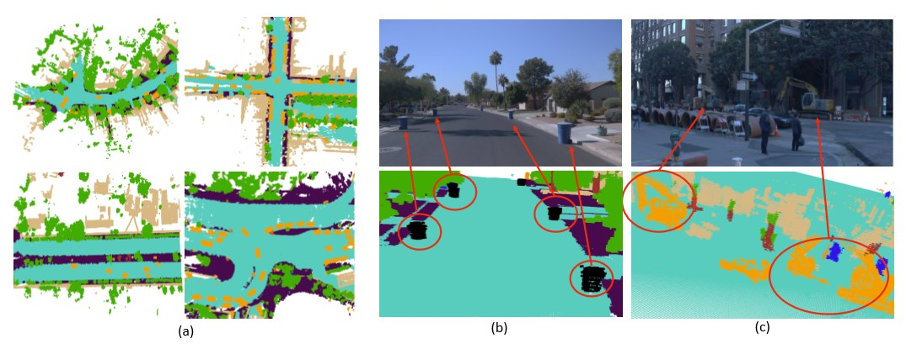
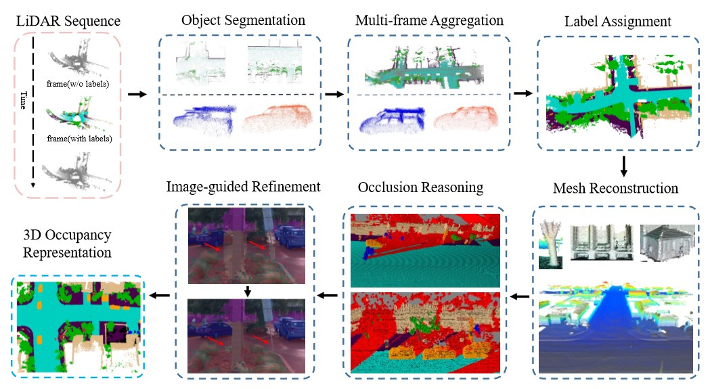
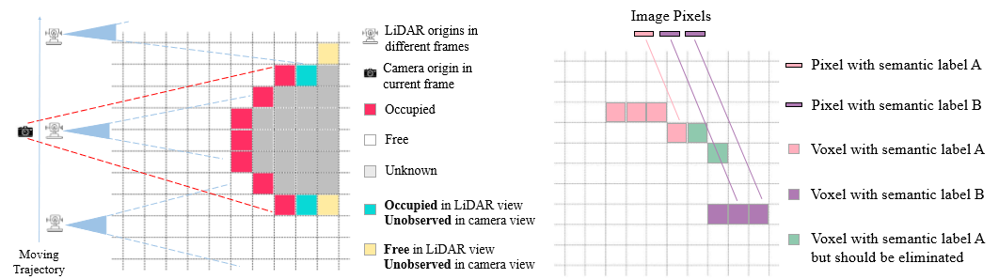
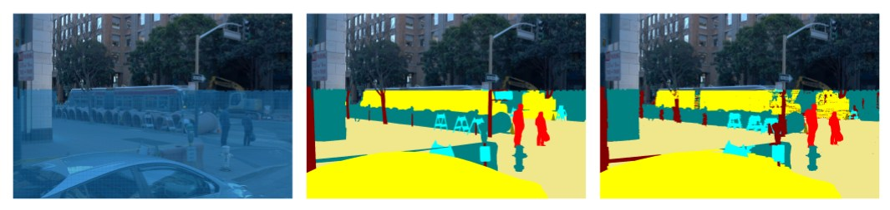
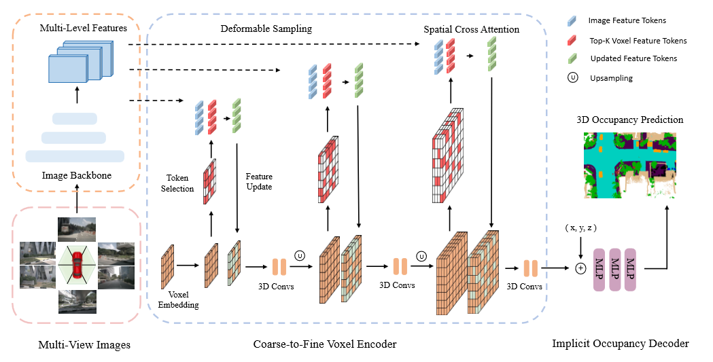
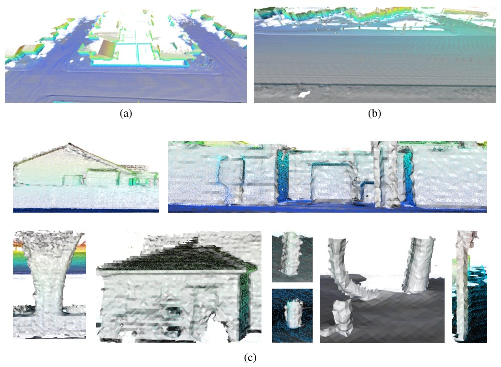
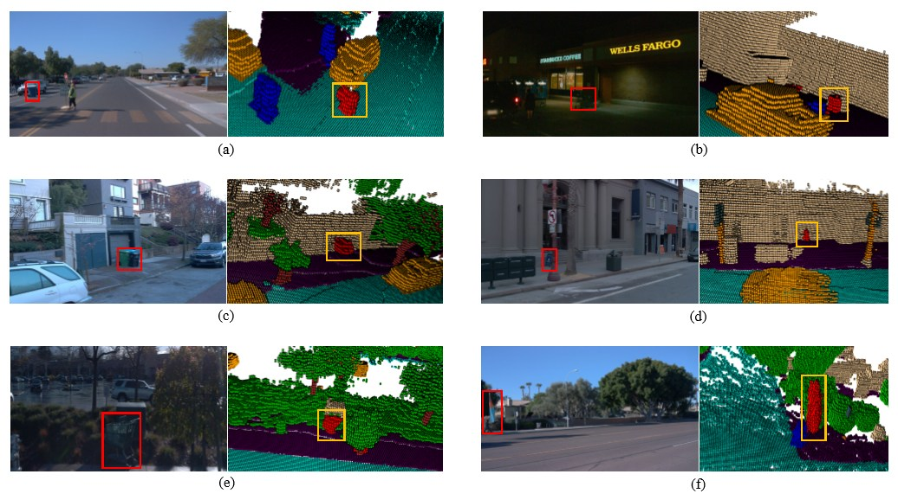
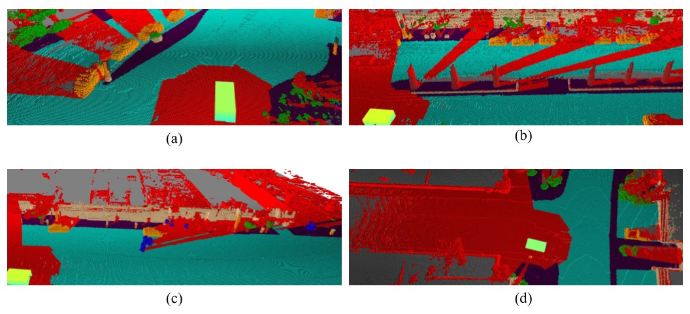
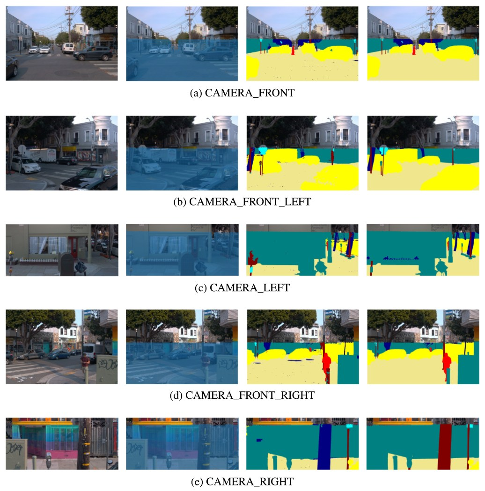

目次
Occ3D: A Large-Scale 3D Occupancy Prediction Benchmark for Autonomous Driving
Xiaoyu Tian1*、Tao Jiang1,3*、Longfei Yun1、Yucheng Mao1、Huitong Yang4、Yue Wang2、Yilun Wang1、Hang Zhao1,3,4†
1IIIS, Tsinghua University 2University of Southern California 3Shanghai AI Lab 4Shanghai Qi Zhi Institute
arXiv:2304.14365v3 [cs.CV]、2023年12月13日／第37回 Conference on Neural Information Processing Systems（NeurIPS 2023）Track on Datasets and Benchmarks
翻訳について：原文 PDF は
11_Occ3D_2304.14365.pdf（全 25 ページ）。本文、図の説明、図中ラベル、表、脚注、付録を訳出し、論文タイトルと参考文献は原文のまま掲載。図は原図を掲載し、英語ラベルの日本語訳を併記した。数式・数値・引用番号・コードの識別子は原文を維持。原文の記述に関する補足は「訳注」と明示し、本文と区別している。
脚注*：著者らの貢献は同等である。
脚注†：連絡先：hangzhao@mail.tsinghua.edu.cn

図1：我々の Occ3D データセットは、豊かな意味的・幾何的表現力を示す。（a）Occ3D データセットにおけるシーンの多様性。（b）語彙外（out-of-vocabulary）の物体。一般物体（General Objects, GO）とも呼ばれ、現実世界では網羅的に列挙することができない。（c）不規則な形状の物体。3D バウンディングボックスではその正確な幾何形状を表現できない。
要旨
ロボットの知覚には、3D の幾何形状と意味（セマンティクス）の両方をモデル化することが求められる。既存手法は通常 3D バウンディングボックスの推定に注力しており、より細かな幾何的詳細を無視し、一般的な語彙外の物体の扱いに苦慮している。シーンの詳細な占有状態と意味を推定する 3D 占有予測（3D occupancy prediction）は、これらの限界を克服するための新たなタスクである。3D 占有予測を支えるため、我々は任意のシーンに対して高密度かつ可視性を考慮したラベルを生成するラベル生成パイプラインを開発する。このパイプラインは、ボクセル高密度化、遮蔽推論、画像誘導ボクセル精緻化の 3 段階からなる。我々は Waymo Open Dataset と nuScenes Dataset から導出した 2 つのベンチマーク、すなわち Occ3D-Waymo ベンチマークと Occ3D-nuScenes ベンチマークを構築する。さらに、提案データセットについて様々なベースラインモデルを用いた広範な分析を提供する。最後に、Coarse-to-Fine Occupancy（CTF-Occ）ネットワークと名付けた新しいモデルを提案し、これが Occ3D ベンチマークにおいて優れた性能を示すことを明らかにする。コード、データ、ベンチマークは https://tsinghua-mars-lab.github.io/Occ3D/ で公開している。
1 はじめに
3D 知覚は、自動運転のような視覚ベースのロボットシステムにおける極めて重要な構成要素である。最も広く用いられている視覚知覚タスクの一つは 3D 物体検出であり、事前に定められたオントロジーツリーで定義された物体の 3D 位置と寸法を推定する［48, 22］。得られる 3D バウンディングボックスはコンパクトであるが、図1に示すように、その表現力の水準には制約がある。（1）3D バウンディングボックス表現は物体の幾何的詳細を消し去ってしまう。たとえば、建設車両には本体から突き出した機械式アームがある。（2）オープンワールドの物体カテゴリは網羅的に列挙できないため、路上のゴミ箱のような珍しいカテゴリは、しばしば無視されてデータセットでラベル付けされない［4, 43］。
これらの限界は、オントロジーツリーの内外を問わず、物体の詳細な幾何形状と意味をモデル化できる汎用的で一貫した表現を必要とする。3D 占有予測、すなわち 3D 空間内のあらゆるボクセルを理解することは、この目標を達成するための重要なタスクである。我々は 3D 占有予測タスクを次のように定式化する。モデルは、画像からシーン内のあらゆるボクセルの占有状態と意味ラベルを同時に推定する必要がある［2, 24, 5］。各ボクセルの占有状態は、空き（free）、占有（occupied）、未観測（unobserved）のいずれかに分類できる。占有ボクセルには意味ラベルが割り当てられる。事前定義されたカテゴリに含まれない物体は、一般物体（General Objects, GO）としてラベル付けされる。GO はまれであるが、事前定義されたカテゴリによる 3D 物体検出では通常検出されないため、安全性を考慮した知覚タスクにとって不可欠である。
3D 占有予測における近年の進展［5, 16, 53］にもかかわらず、ベンチマークを伴う高品質なデータセットは顕著に欠如している。このようなデータセットの構築は、スパース性、遮蔽、3D-2D の位置ずれという 3 つの主要な問題のために困難である。これらの障害を克服するため、我々はボクセル高密度化、遮蔽推論、画像誘導ボクセル精緻化の 3 ステップからなる半自動ラベル生成パイプラインを作成する。パイプライン内の各ステップは 3D-2D 一貫性指標によって検証されており、提案するラベル生成パイプラインが高密度かつ可視性を考慮したアノテーションを効果的に生成することを示している。
公開されている Waymo Open Dataset［43］、nuScenes［4］、Panoptic nuScenes［11］Dataset に基づき、我々は本タスクのための 2 つのベンチマーク、Occ3D-Waymo と Occ3D-nuScenes をそれぞれ作成する。SemanticKITTI［2］や KITTI-360［24］といった従来のデータセットと比較して、我々の Occ3D は、最も多様なシナリオとともに、全周囲画像と高解像度の 3D ボクセル占有表現を提供する初めてのデータセットである。
近年の一連の占有予測モデルを Occ3D 上で再現し、ベンチマークを行う。加えて、Transformer ベースの粗から細への（Coarse-To-Fine）3D 占有（Occupancy）予測ネットワークである CTF-Occ を提案する。CTF-Occ は、効率的な粗から細への方式で、クロスアテンションにより 2D 画像特徴を 3D 空間に集約することで、優れた性能を達成する。
本研究の貢献は次のとおりである。（1）この新興分野の研究を促進するための高品質な 3D 占有予測ベンチマークである Occ3D を導入する。（2）Occ3D ベンチマークを構築するための厳密な自動ラベル生成パイプラインを提示し、パイプラインの有効性を包括的に検証する。（3）既存モデルのベンチマークを行い、優れた 3D 占有予測性能を達成する新しい CTF-Occ ネットワークを提案する。
2 関連研究
3D 検出。3D 物体検出の目標は、事前定義されたオントロジー内の物体の位置と寸法を推定することである。3D 物体検出は LiDAR 点群上で行われることが多い［55, 18, 51, 52, 34, 36, 10, 39］。近年では、低コストで豊かな意味内容を持つことから、視覚ベースの 3D 物体検出がより注目を集めている［41, 46, 48, 22, 26, 33, 28, 13, 27, 15, 21, 31, 25］。LiDAR とカメラの融合手法もいくつか提案されている［35, 8, 28］。
3D 占有予測。3D 占有予測に関連するタスクとして、占有格子地図作成（Occupancy Grid Mapping, OGM）［30, 44, 47］がある。これは移動ロボットにおける古典的なタスクであり、ノイズを含む逐次的な距離計測から確率的な地図を生成することを目的とする。OGM はベイズの枠組みで解くことができ、近年の研究の中には、下流タスクのために意味的セグメンテーションと OGM をさらに組み合わせたものもある［17, 42, 37］。OGM は距離センサを必要とし、またシーンが時間的に静的であるという仮定を置くことに注意されたい。3D 占有予測タスクにはこれらの制約がなく、動的なシーンにおける視覚のみのロボットシステムに適用できる。最近では、TPVFormer［16］が 3D 占有を予測するための三視点（tri-perspective view）手法を提案している。しかし、LiDAR による教師信号のため、その出力はスパースである。
| データセット | 種別 | 全周囲 | モダリティ | クラス数 | シーケンス数 | フレーム数 | ボリュームサイズ | 解像度（m） |
|---|---|---|---|---|---|---|---|---|
| NYUv2［40］ | 屋内 | ✗ | C & D | 11 | 464 | 1449 | [240, 240, 14] | - |
| ScanNet［9］ | 屋内 | ✗ | C & D | 11 | 1513 | 1513 | [62, 62, 31] | - |
| SemanticKITTI［2］ | 屋外 | ✗ | C & L | 28 | 22 | 4,3000 | [256, 256, 32] | [0.2, 0.2, 0.2] |
| KITTI-360［23］ | 屋外 | 魚眼（Fisheye） | C & L | 19 | 11 | 90,960 | [256, 256, 32] | [0.2, 0.2, 0.2] |
| Occ3D-nuScenes | 屋外 | ✓ | C & L | 16+GO | 1000 | 40,000 | [200, 200, 16] | [0.4, 0.4, 0.4] |
| Occ3D-Waymo | 屋外 | ✓ | C & L | 14+GO | 1000 | 200,000 | [3200, 3200, 128] | [0.05, 0.05, 0.05] |
表1：データセットの比較。Occ3D データセットを他の占有予測データセットと比較する。全周囲（Surround）＝✓ は全周囲画像の入力を表す。C、D、L はそれぞれカメラ、深度、LiDAR を表す。（訳注：SemanticKITTI のフレーム数「4,3000」は原文どおり。43,000 の誤植と思われる。）
意味的シーン補完。もう一つの関連タスクは意味的シーン補完（Semantic Scene Completion, SSC）［1, 6, 9, 3, 24, 50, 38, 49, 7, 19, 50, 32, 20, 29, 54］であり、部分的な観測から高密度な意味空間を推定することを目的とする。SSC は 3D 占有予測と 2 つの点で異なる。（1）SSC は可視部分が与えられたときに遮蔽領域を推論することに重点を置くが、占有予測は不可視領域を推定することを意図しない。（2）既存の SSC タスクは通常静的なシーンを扱うのに対し、占有予測は動的なシーンを扱う。
3 Occ3D データセット
3.1 タスク定義
センサ入力の系列が与えられたとき、3D 占有予測の目標は 3D シーン内の各ボクセルの状態を推定することである。具体的には、タスクの入力は \(N\) 台の全周囲カメラ画像の \(T\) フレーム分の履歴系列 \(\{\mathcal{I}_{i,t} \in \mathbf{R}^{H_i \times W_i \times 3}\}\) である。ここで \(i = 1, ..., N\)、\(t = 1, ..., T\) である。また、各フレームにおいてセンサの内部パラメータ \(\{K_i\}\) と外部パラメータ \(\{[R_i|t_i]\}\) は既知であると仮定する。正解ラベルはボクセルの状態であり、占有状態（「占有（occupied）」、「空き（free）」、「未観測（unobserved）」）と意味ラベル（カテゴリ、または「不明（unknow）」）からなる。たとえば、車両上のボクセルは（「occupied」, 「vehicle」）とラベル付けされ、空き空間のボクセルは（「free」, None）とラベル付けされる。3D 占有予測の枠組みは、インスタンス ID や動きベクトルといった追加の属性も出力としてサポートできることに注意されたい。これらは今後の課題とする。
3.2 データセットの統計
我々は 2 つの 3D 占有予測データセット、Occ3D-nuScenes と Occ3D-Waymo を生成する。Occ3D-nuScenes は、学習用 600 シーン、検証用 150 シーン、テスト用 150 シーンを含み、合計 40,000 フレームである。16 の一般的なクラスに加え、一般物体（GO）クラスを 1 つ持つ。各サンプルは [-40m, -40m, -1m, 40m, 40m, 5.4m] の範囲をカバーし、ボクセルサイズは [0.4m,0.4m,0.4m] である。Occ3D-Waymo は、学習用 798 シーケンス、検証用 202 シーケンスを含み、累計 200,000 フレームである。14 の既知の物体クラスに加え、GO クラスを 1 つ持つ。各サンプルは [-80m, -80m, -1m, 80m, 80m, 5.4m] の範囲をカバーし、ボクセルサイズは [0.05m, 0.05m, 0.05m] と極めて細かい。
表1に示すように、Occ3D は他のデータセットと比較して際立っている。屋内データセットである NYUv2 と ScanNet は全周囲画像を欠き、シーケンス数とフレーム数も少ない。他の 2 つの屋外データセットである SemanticKITTI と KITTI-360 も、KITTI-360 の魚眼画像を除いて全周囲画像を欠いている。自動運転の安全性にとって一般物体クラスは特に重要であるが、これは SemanticKITTI と KITTI-360 データセットでは利用できない機能である。さらに、Occ3D-Waymo は現在、すべてのオープンソースデータセットの中で、最も多様なシナリオ、包括的なラベル、最高の解像度を備えた 3D 占有データセットである。
3.3 データセット構築パイプライン
正確な深度と幾何形状が欠けているため、画像から 3D 占有をアノテーションすることは不可能である。そこで我々は、LiDAR スキャンとそのアノテーションを活用して高品質な占有ラベルを構築する。しかし、スパース性、遮蔽、3D-2D の位置ずれという 3 つの主要な障害がある。スパース性とは、LiDAR スキャンがスパースであるために高密度なボクセルの取得が妨げられるという事実を指す。一方、遮蔽は、高密度化した後に遮蔽によって現在の画像視点から不可視となるボクセルの識別に関わる。3D-2D の位置ずれは、3D ボクセルを 2D 画像に投影する際の不一致に関するものであり、多くの場合センサノイズや姿勢誤差によって引き起こされる。

図2：ラベル生成パイプラインの概要。パイプラインは 3 つの主要ステップ、すなわちボクセル高密度化、遮蔽推論、画像誘導ボクセル精緻化からなる。ボクセル高密度化は、物体セグメンテーション、マルチフレーム集約、ラベル割り当てからなる。
図中ラベル：LiDAR Sequence＝LiDAR 系列、Time＝時間、frame(w/o labels)＝フレーム（ラベルなし）、frame(with labels)＝フレーム（ラベルあり）、Object Segmentation＝物体セグメンテーション、Multi-frame Aggregation＝マルチフレーム集約、Label Assignment＝ラベル割り当て、Mesh Reconstruction＝メッシュ再構成、Occlusion Reasoning＝遮蔽推論、Image-guided Refinement＝画像誘導精緻化、3D Occupancy Representation＝3D 占有表現
提案するラベル生成パイプラインは上記の課題に対処するものであり、その概要を図2に示す。まずボクセル高密度化では、静的物体と動的物体のそれぞれについて別々にマルチフレーム集約を行うことで、点群の密度を高める。次に、K 近傍法アルゴリズムを用いてラベルのない点にラベルを割り当て、メッシュ再構成を利用して穴埋めを行う。続いて、LiDAR とカメラの両方の視点から遮蔽推論を行い、レイキャスティング操作を利用して各ボクセルの占有状態をラベル付けする。最後に、画像誘導ボクセル精緻化処理によって位置ずれしたボクセルを除去する。各ステップの擬似コードとハイパーパラメータは付録に示す。
3.3.1 ボクセル高密度化
LiDAR データは本質的にスパースであるため、高密度な点群を得るために次のことを行う。1）動的物体と静的背景の点を別々に扱いながら、全フレームにわたるすべての点を集約する。2）ラベルのないフレーム（以下、非キーフレームと呼ぶ）を活用し、K 近傍法（K-Nearest Neighbors, KNN）アルゴリズムを用いて意味ラベルを割り当てる。3）フレーム集約を行っても物体表面には穴が残るため、メッシュ再構成によってこれらの穴を埋める。
動的物体と静的物体のセグメンテーション。個々のフレームから得られた点群は、「動的物体」と「静的シーン」に分類される。静的シーンには、地面、建物、道路標識など、時間とともに位置が変化しない実体が含まれる。自動車や歩行者などの動的物体は、素朴な時間方向の集約では動きぼけ（モーションブラー）が生じるため、分離する必要がある。
マルチフレーム集約。動的物体を静的シーンから分離した後、それぞれに対して別々にマルチフレーム集約を行う。動的物体については、アノテーションされた、あるいは追跡されたボックス内に位置する点を抽出し、それらをセンサ座標系からボックス座標系へ変換する。変換したこれらの点を連結することで、動的物体の点群を高密度化する。静的シーンについては、単純にグローバル座標系で時間方向に点を集約する。その後、静的シーンを現在フレームにおける集約済みの動的物体と融合し、単一フレームの高密度点群を生成する。

図3：可視性と精緻化。（a）遮蔽推論による可視性マスク。LiDAR 可視性：ボクセルは LiDAR を反射すれば「占有」（赤のボクセル）、レイが通過すれば「空き」（白のボクセル）とする。カメラ可視性：カメラのレイによって走査されないボクセルはすべて「未観測」に設定する（青と黄のボクセル）。（b）画像誘導ボクセル精緻化。レイキャスティング中に、ピクセルのラベルと同じ意味ラベルを持つ最初のボクセルに出会ったとき、それまでに通過したボクセルの状態を「空き」に設定する（緑のボクセル）。
図中ラベル：（a）LiDAR origins in different frames＝異なるフレームにおける LiDAR 原点、Camera origin in current frame＝現在フレームにおけるカメラ原点、Occupied＝占有、Free＝空き、Unknown＝不明、Occupied in LiDAR view / Unobserved in camera view＝LiDAR 視点では占有／カメラ視点では未観測、Free in LiDAR view / Unobserved in camera view＝LiDAR 視点では空き／カメラ視点では未観測、Moving Trajectory＝移動軌跡。（b）Image Pixels＝画像ピクセル、Pixel with semantic label A / B＝意味ラベル A／B を持つピクセル、Voxel with semantic label A / B＝意味ラベル A／B を持つボクセル、Voxel with semantic label A but should be eliminated＝意味ラベル A を持つが除去すべきボクセル。
ラベル割り当てのための KNN。全フレームの各点を直接アノテーションする作業は労力を要する。現在のデータセットは選択された一部のフレームのみをアノテーションしている。たとえば Waymo データセットのアノテーションは 2Hz の頻度で行われているのに対し、LiDAR スキャンは 10Hz の頻度で動作する。ラベルのないフレームを活用するため、我々は K 近傍法（KNN）アルゴリズムを用いて、ラベルのない各点に意味ラベルを割り当てる。具体的には、ラベルのないフレーム内の各点について、最も近い K 個のキーフレームの点を見つけ、多数決による意味ラベルを割り当てる。
メッシュ再構成。マルチフレーム集約の後でも、点群の密度は高品質な高密度ボクセルを生成するには依然として十分ではない。ボクセルサイズを小さくすると物体に多くの穴が生じうる一方、ボクセルサイズを大きくすると過度な平滑化を招きうる。これらの問題を緩和するため、メッシュ再構成を行う。地面以外のカテゴリについては、打ち切り符号付き距離関数（truncated signed distance functions, TSDF）に基づく体積的表面再構成の手法である VDBFusion［45］によって表面を最適化する。VDBFusion の柔軟性と有効性は、Poisson 表面再構成などの従来手法を上回る。地面については、レイの角度が小さいと TSDF 値が不正確になるため、VDBFusion はうまく機能しない。代わりに、一様な仮想格子点を設定し、小領域内の点を用いて各局所表面メッシュをフィッティングする。メッシュを再構成した後、高密度な点サンプリングを行い、さらに KNN を採用してサンプリング点に意味ラベルを割り当てる。
3.3.2 可視性マスクのための遮蔽推論
我々は遮蔽推論を行い、LiDAR 可視性マスクとカメラ可視性マスクを導入することで、3D 占有予測ベンチマークをさらに強化する。
集約 LiDAR 可視性マスク。集約された LiDAR 点群から 3D 占有格子を得るための単純な方法は、点を含むボクセルを「占有」、残りを「空き」に設定することである。しかし、LiDAR の点はスパースであるため、一部の占有ボクセルは LiDAR ビームによって走査されず、「空き」と誤ってラベル付けされうる。この問題を避けるため、図3a に示すように、レイキャスティング操作を行って各ボクセルの可視性を決定する。具体的には、センサ原点から各 LiDAR 点へレイを投射する。ボクセルは、LiDAR 点を反射するか、レイが通過するかのいずれかであれば可視とみなされる。どちらの条件も満たさない場合、そのボクセルは「未観測」に分類される。
カメラ可視性マスク。各占有ボクセルの中心とカメラ原点を結び、レイを形成する。各レイに沿って、最初の占有ボクセルを「観測済み」、残りを「未観測」に設定する。カメラのレイによって走査されないボクセルもすべて「未観測」に設定する。ボクセルの可視性の決定は 3D 占有予測タスクの評価にとって極めて重要である。評価は LiDAR 視点とカメラ視点の両方で「観測済み」であるボクセルに対してのみ行われる。
3.3.3 画像誘導ボクセル精緻化
LiDAR のノイズや姿勢のドリフトなどの影響により、物体の 3D 形状が実際の物理的寸法よりも大きく見えることがある。これを修正するため、画像の意味的セグメンテーションマスクに導かれて、誤って占有とされたボクセルを除去することで、データセットをさらに精緻化する。図3b に示すように、3D ボクセルと 2D ピクセルの対応を得るために、前節と同様のレイキャスティング操作を採用する。すなわち、各占有ボクセルの中心とカメラ中心を結んでレイを形成し、このレイが通過するボクセルをピクセル原点から近い順に遠くまでたどる。ピクセルのラベルと同じ意味ラベルを持つ最初のボクセルに出会ったとき、それまでに通過したボクセルの状態を「空き」に設定する。このステップにより、物体境界における形状が大幅に改善される。

図4：3D-2D 一貫性（a）2D ROI：単一フレームの LiDAR スキャン範囲内の 2D ROI。（b）2D ピクセル意味ラベル：2D ROI 内の単一画像の意味ラベル。（c）3D ボクセル意味ラベル：2D ROI 内で 3D ボクセルの意味ラベルを画像上に再投影したもの。
4 品質チェック
すべての物体の完全な形状に忠実な占有表現を得ることは困難である。したがって、データセットの品質を評価し、パイプラインの各ステップの有効性を確認することが極めて重要である。この目的のため、2D ピクセルとそれに対応するボクセルの間の意味的一貫性を確認することで占有の品質を評価する手法を提案する。
4.1 3D-2D 一貫性
集約と再構成によって得られた 3D 占有の意味ラベルと比べると、人手でアノテーションされた 2D の意味マスクは非常に正確である。そこで、3D ボクセルの意味ラベルとそれに対応する 2D 画像ピクセルの意味ラベルとの間の 3D-2D 一貫性を検証することで、データセットの品質を評価する。3D-2D 一貫性は 3 つのステップで計算する。すなわち、現在フレームについて一貫性計算に関与する 2D ピクセル領域を絞り込み、このピクセル領域に対応する 3D ボクセルを特定し、最後にそれらの 3D-2D 意味的一貫性を計算する。
2D ROI。2D 画像には LiDAR センサの走査範囲外にある物体が含まれる。3D-2D 一貫性を計算する際には、単一の LiDAR フレームでカバーされる最大範囲を 2D 関心領域（Region of interest, ROI）として用いる。具体的には、LiDAR からカメラへの変換を用いて、単一フレームの LiDAR 点を 2D 画像座標系に投影する。次に、アルゴリズムは水平座標方向にたどり、各垂直列において投影点の最も高い垂直座標をその列の高さとして選択する。図4a に示すように、この高さより下のすべてのピクセルを、一貫性計算に関与する 2D の有効領域として扱う。
3D ラベルクエリ。各画像で 2D ROI を決定した後、これらの領域に対応する 3D ボクセルを特定する。各ボクセルは一定の体積を持つため、それらを 2D 画像に直接投影すると、複数ピクセルとの対応付けの問題が生じる。さらに、投影が重なり合う場合、対応する遮蔽関係の決定が複雑になる。そこで代わりに、各 2D 画像ピクセルについて対応する 3D ボクセルをクエリする。具体的には、選択された領域内の各ピクセルについてレイの走査を行い、レイに最も近い 3D ボクセルを見つける。
評価指標。データセットの品質を評価するため、画像内の各ピクセルについて、その意味ラベルを対応する 3D ボクセルの意味予測と比較する。標準的な適合率（Precision）、再現率（Recall）、Intersection-over-Union（IoU）、mean Intersection-over-Union（mIoU）の指標を採用する。
| SFP | MFP | VS | Mesh | IGR | 指標 | vehicle | bicyclist | ped | sign | road | pole | cone | bicycle | building | mIOU |
|---|---|---|---|---|---|---|---|---|---|---|---|---|---|---|---|
| ✓ | - | IoU | 5.87 | 5.12 | 3.65 | 3.47 | 0.33 | 0.10 | 0.09 | 0.11 | 0.34 | 13.32 | |||
| 再現率 | 8.53 | 6.61 | 4.81 | 3.85 | 0.33 | 0.10 | 0.09 | 0.11 | 0.34 | ||||||
| 適合率 | 95.38 | 58.66 | 60.13 | 61.44 | 92.78 | 34.90 | 25.35 | 60.12 | 66.93 | ||||||
| ✓ | ✓ | - | IoU | 37.89 | 37.99 | 28.25 | 12.57 | 11.70 | 5.48 | 3.51 | 6.01 | 15.49 | 17.65 | ||
| 再現率 | 40.02 | 58.77 | 37.21 | 14.80 | 12.06 | 6.32 | 3.99 | 6.45 | 17.69 | ||||||
| 適合率 | 87.48 | 51.79 | 53.98 | 45.45 | 79.72 | 29.25 | 22.37 | 46.76 | 55.49 | ||||||
| ✓ | ✓ | 0.1 | IoU | 75.23 | 38.66 | 30.78 | 33.77 | 56.30 | 30.58 | 24.03 | 31.36 | 49.85 | 41.17 | ||
| 再現率 | 91.20 | 87.00 | 60.90 | 56.80 | 67.35 | 55.97 | 42.22 | 37.00 | 68.66 | ||||||
| 適合率 | 81.12 | 41.03 | 38.37 | 45.45 | 95.53 | 40.27 | 35.81 | 67.28 | 64.53 | ||||||
| ✓ | ✓ | 0.1 | ✓ | IoU | 75.13 | 37.97 | 30.36 | 32.88 | 82.79 | 16.63 | 17.48 | 32.46 | 52.27 | 41.99 | |
| 再現率 | 90.98 | 83.02 | 55.07 | 54.93 | 85.34 | 63.57 | 58.13 | 40.77 | 77.81 | ||||||
| 適合率 | 81.17 | 41.17 | 40.36 | 45.02 | 96.52 | 18.38 | 19.99 | 61.43 | 61.43 | ||||||
| ✓ | ✓ | 0.05 | ✓ | IoU | 78.76 | 46.33 | 34.04 | 34.85 | 64.56 | 18.28 | 20.57 | 42.59 | 52.27 | 43.58 | |
| 再現率 | 89.20 | 84.22 | 55.42 | 52.02 | 67.43 | 63.17 | 58.89 | 53.71 | 84.73 | ||||||
| 適合率 | 87.06 | 50.74 | 46.87 | 51.36 | 93.80 | 20.46 | 24.02 | 67.28 | 57.71 | ||||||
| ✓ | ✓ | 0.05 | ✓ | ✓ | IoU | 88.82 | 76.89 | 47.54 | 50.18 | 71.97 | 31.77 | 32.09 | 66.40 | 60.90 | 58.50 |
| 再現率 | 91.34 | 92.12 | 63.78 | 61.20 | 75.11 | 73.80 | 62.44 | 77.67 | 94.73 | ||||||
| 適合率 | 96.98 | 82.31 | 65.11 | 73.59 | 94.51 | 35.80 | 39.76 | 82.07 | 63.04 |
表2：設計上の選択に関する定量的結果。SFP は単一フレームの点、MFP はラベルのないフレームからの点の集約、VS はボクセルサイズの略、Mesh はメッシュ再構成の適用、IGR は画像誘導ボクセル精緻化を表す。各選択における上から下への 3 つの数値は、その特定クラスの IoU、再現率、適合率である。（訳注：原表では各セルに 3 つの数値が縦に並ぶ。本訳では「指標」列を追加し 3 行に分けて示した。列名 vehicle＝車両、bicyclist＝自転車乗り、ped＝歩行者、sign＝標識、road＝道路、pole＝ポール、cone＝コーン、bicycle＝自転車、building＝建物。）
4.2 定量的結果
表2は、我々の自動ラベリングパイプラインで提案した各ステップによる性能向上を示している。3D-2D 一貫性は Occ3D-Waymo のサブセットで評価している。単一フレームの点（SFP）とは、単一フレームの点群のみを用いて、先に提案した方法でその 3D-2D 一貫性を計算することを意味する。表に示すように、我々の方法は SFP において高い適合率と低い再現率を達成する。SFP に加えて、複数フレームから点を集約する（MFP）。SFP と比較して、MFP では再現率が大幅に改善するが、適合率はある程度低下する。これは LiDAR のノイズや姿勢誤差に起因する。MFP に基づいてボクセル化の効果を調べると、適合率と再現率がともに向上する。これは、姿勢の不正確さに対する補正の効果をさらに裏付けるものである。前述のとおり、ボクセルサイズが小さいと物体に多くの穴が生じ、ボクセルサイズが大きいと過度な平滑化につながる。前者は再現率の低下を、後者は適合率の低下を招く。我々は、ボクセルサイズが小さいことによる物体の穴の問題を緩和するためにメッシュ再構成を用いており、その効果は表の 3 行目と 5 行目の比較に反映されている。最後に、最終行に示すように、提案する画像誘導精緻化が実際に 3D-2D の意味的一貫性を高めることを示す。
5 粗から細への占有ネットワーク
困難な 3D 占有予測問題に対処するため、我々は Coarse-to-Fine Occupancy（CTF-Occ）ネットワークと名付けた新しい Transformer ベースのモデルを提示する。CTF-Occ ネットワークの概要を図5に示す。まず、画像バックボーンを用いてマルチビュー画像から 2D 画像特徴を抽出する。次に、3D ボクセルクエリがクロスアテンション操作によって 2D 画像特徴を 3D 空間に集約する。我々のアプローチは、粗から細への方式で、段階的なトークン選択と空間クロスアテンションを通じてボクセル特徴表現を漸進的に改善するピラミッド型ボクセルエンコーダを用いる。このアプローチは空間解像度を高め、物体の詳細な幾何形状を精緻化し、最終的により正確な 3D 占有予測につながる。
段階的トークン選択。3D 占有を予測するタスクには幾何形状の詳細な表現が必要であるが、すべての 3D ボクセルトークンをマルチビュー画像内の関心領域と相互作用させると、計算コストとメモリコストが非常に大きくなりうる。シーン内のほとんどの 3D ボクセル格子は空であることを踏まえ、我々はクロスアテンション計算において前景および不確実なボクセルトークンを選択的に選ぶ段階的トークン選択（incremental token selection）戦略を提案する。この戦略により、精度を犠牲にすることなく適応的かつ効率的な計算が可能になる。具体的には、各ピラミッドレベルの冒頭で、各ボクセルトークンを二値分類器に入力し、そのボクセルが空かどうかを予測する。分類器の学習には、二値の正解占有マップを教師信号として用いる。我々のアプローチでは、後続の特徴精緻化のために、最も不確実な K 個のボクセルトークンを選択する。

図5：CTF-Occ ネットワークのアーキテクチャ。CTF-Occ は、画像バックボーン、粗から細へのボクセルエンコーダ、陰的占有デコーダからなる。
図中ラベル：Multi-Level Features＝マルチレベル特徴、Image Backbone＝画像バックボーン、Multi-View Images＝マルチビュー画像、Deformable Sampling＝変形可能サンプリング、Spatial Cross Attention＝空間クロスアテンション、Token Selection＝トークン選択、Feature Update＝特徴更新、Voxel Embedding＝ボクセル埋め込み、3D Convs＝3D 畳み込み、Coarse-to-Fine Voxel Encoder＝粗から細へのボクセルエンコーダ、Image Feature Tokens＝画像特徴トークン、Top-K Voxel Feature Tokens＝上位 K 個のボクセル特徴トークン、Updated Feature Tokens＝更新された特徴トークン、Upsampling＝アップサンプリング、3D Occupancy Prediction＝3D 占有予測、Implicit Occupancy Decoder＝陰的占有デコーダ
空間クロスアテンション。ピラミッドの各レベルにおいて、まず上位 K 個のボクセルトークンを選択し、次に対応する画像特徴を集約する。特に、ボクセル特徴をさらに精緻化するために 3D 空間クロスアテンション［22］を適用する。
畳み込み特徴抽出器。関連する画像特徴に変形可能クロスアテンションを適用した後、前景ボクセルトークンの特徴を更新する。次に、積み重ねた一連の畳み込みを用いて、3D ボクセル特徴マップ全体にわたる特徴の相互作用を強化する。現在のレベルの最後に、トライリニア補間を用いて 3D ボクセル特徴をアップサンプリングする。
占有デコーダ。CTF ボクセルエンコーダは、ボクセル化された特徴出力 \(V_{out} \in \mathbb{R}^{W \times H \times L \times C}\) を生成する。次に、ボクセル特徴 \(V_{out}\) を複数の MLP に入力して、最終的な占有予測 \(O \in \mathbb{R}^{W \times H \times L \times C'}\) を得る。ここで \(C'\) は意味クラスの数である。さらに、陰的ニューラル表現を利用することで任意の解像度の出力を提供できる陰的占有デコーダを導入する。陰的デコーダは MLP として実装され、ボクセルエンコーダによって抽出されたボクセル特徴ベクトルと、ボクセル内部の 3D 座標という 2 つの入力を受け取って、意味ラベルを出力する。
6 実験
提案する Occ3D データセットと CTF-Occ モデルのベンチマークを行うため、既存の 3D 占有予測手法を Occ3D-nuScenes と Occ3D-Waymo で評価する。
6.1 実験設定
データセットと評価指標。Occ3D-Waymo は公開されている合計 1,000 シーケンスを含み、そのうち 798 シーンが学習用、202 シーンが検証用である。シーンの範囲は、X 軸と Y 軸に沿って -40m から 40m、Z 軸に沿って -5m から 7.8m に設定する。Occ3D-nuScenes は学習用 700 シーンと検証用 150 シーンを含む。占有の範囲は、X 軸と Y 軸について -40m から 40m、Z 軸について -1m から 5.4m と定義する。両データセットとも、ボクセルサイズ 0.4m を選択して実験を行う。性能の評価には Intersection-over-Union（IoU）と mean Intersection-over-Union（mIoU）の指標を採用する。（訳注：3.2 節では Occ3D-nuScenes の学習用シーンを 600、Occ3D-Waymo の範囲を [-80m, …, 80m]・Z 方向 -1m〜5.4m としており、本節の記述と一致しない。原文どおりに訳出した。）
| 手法 | others | barrier | bicycle | bus | car | Cons. Veh | motorcycle | pedestrian | traffic cone | trailer | truck | Dri. Sur | other flat | sidewalk | terrain | manmade | vegetation | mIoU |
|---|---|---|---|---|---|---|---|---|---|---|---|---|---|---|---|---|---|---|
| MonoScene［5］ | 1.75 | 7.23 | 4.26 | 4.93 | 9.38 | 5.67 | 3.98 | 3.01 | 5.90 | 4.45 | 7.17 | 14.91 | 6.32 | 7.92 | 7.43 | 1.01 | 7.65 | 6.06 |
| TPVFormer［16］ | 7.22 | 38.90 | 13.67 | 40.78 | 45.90 | 17.23 | 19.99 | 18.85 | 14.30 | 26.69 | 34.17 | 55.65 | 35.47 | 37.55 | 30.70 | 19.40 | 16.78 | 27.83 |
| BEVDet［14］ | 4.39 | 30.31 | 0.23 | 32.26 | 34.47 | 12.97 | 10.34 | 10.36 | 6.26 | 8.93 | 23.65 | 52.27 | 24.61 | 26.06 | 22.31 | 15.04 | 15.10 | 19.38 |
| OccFormer［53］ | 5.94 | 30.29 | 12.32 | 34.40 | 39.17 | 14.44 | 16.45 | 17.22 | 9.27 | 13.90 | 26.36 | 50.99 | 30.96 | 34.66 | 22.73 | 6.76 | 6.97 | 21.93 |
| BEVFormer［22］ | 5.85 | 37.83 | 17.87 | 40.44 | 42.43 | 7.36 | 23.88 | 21.81 | 20.98 | 22.38 | 30.70 | 55.35 | 28.36 | 36.0 | 28.06 | 20.04 | 17.69 | 26.88 |
| CTF-Occ（Ours） | 8.09 | 39.33 | 20.56 | 38.29 | 42.24 | 16.93 | 24.52 | 22.72 | 21.05 | 22.98 | 31.11 | 53.33 | 33.84 | 37.98 | 33.23 | 20.79 | 18.0 | 28.53 |
表3：Occ3D-nuScenes データセットにおける 3D 占有予測性能。Cons. Veh は建設車両（construction vehicle）、Dri. Sur は走行可能路面（driveable surface）を表す。（訳注：クラス名 others＝その他、barrier＝バリア、bicycle＝自転車、bus＝バス、car＝乗用車、motorcycle＝オートバイ、pedestrian＝歩行者、traffic cone＝交通コーン、trailer＝トレーラー、truck＝トラック、other flat＝その他の平面、sidewalk＝歩道、terrain＝地形、manmade＝人工物、vegetation＝植生。）
| 手法 | GO | vehicle | bicyclist | pedestrian | sign | traffic light | pole | Cons. Cone | bicycle | motorcycle | building | vegetation | tree trunk | road | sidewalk | mIoU |
|---|---|---|---|---|---|---|---|---|---|---|---|---|---|---|---|---|
| BEVDet［14］ | 0.13 | 13.06 | 2.17 | 10.15 | 7.80 | 5.85 | 4.62 | 0.94 | 1.49 | 0.0 | 7.27 | 10.06 | 2.35 | 48.15 | 34.12 | 9.88 |
| TPVFormer［16］ | 3.89 | 17.86 | 12.03 | 5.67 | 13.64 | 8.49 | 8.90 | 9.95 | 14.79 | 0.32 | 13.82 | 11.44 | 5.8 | 73.3 | 51.49 | 16.76 |
| BEVFormer［22］ | 3.48 | 17.18 | 13.87 | 5.9 | 13.84 | 2.7 | 9.82 | 12.2 | 13.99 | 0.0 | 13.38 | 11.66 | 6.73 | 74.97 | 51.61 | 16.76 |
| CTF-Occ（Ours） | 6.26 | 28.09 | 14.66 | 8.22 | 15.44 | 10.53 | 11.78 | 13.62 | 16.45 | 0.65 | 18.63 | 17.3 | 8.29 | 67.99 | 42.98 | 18.73 |
| LiDAR-Only | 1.01 | 57.41 | 35.31 | 20.33 | 11.7 | 13.01 | 36.21 | 7.81 | 0.13 | 0.0 | 57.83 | 54.71 | 27.07 | 69.15 | 54.47 | 29.74 |
| BEVFormer-Fusion | 5.11 | 64.61 | 52.35 | 21.52 | 32.74 | 17.1 | 42.62 | 27.75 | 13.36 | 0.05 | 63.65 | 60.51 | 35.64 | 81.89 | 66.84 | 39.05 |
表4：Occ3D-Waymo データセットにおける 3D 占有予測性能。Cons. Cone は工事用コーン（construction cone）を表す。（訳注：クラス名 GO＝一般物体、vehicle＝車両、bicyclist＝自転車乗り、pedestrian＝歩行者、sign＝標識、traffic light＝信号機、pole＝ポール、bicycle＝自転車、motorcycle＝オートバイ、building＝建物、vegetation＝植生、tree trunk＝樹幹、road＝道路、sidewalk＝歩道。）
アーキテクチャ。主流の 2 つの BEV モデルである BEVDet［14］と BEVFormer［22］を 3D 占有予測タスクに拡張する。元の検出デコーダを CTF-Occ ネットワークで採用した占有デコーダに置き換え、BEV 特徴エンコーダはそのまま残す。画像バックボーンには FCOS3D［46］で事前学習した ResNet-101［12］を用い、画像サイズは Occ3D-Waymo では (640 × 960)、Occ3D-nuScenes では (928 × 1, 600) にリサイズする。また、既存の 3 つの 3D 占有予測手法である MonoScene［5］、TPVFormer［16］、OccFormer［53］を、提案する Occ3D データセット上で評価する。さらに、Waymo データセットでは LiDAR を入力として用いる実験も行う。「LiDAR-Onl」は単一フレームの LiDAR を入力として採用することを指す。ボクセル化は、x、y、z 軸それぞれについて [0.1, 0.1, 0.4] のボクセルサイズで適用する。続いて ResNet を用いて高密度なボクセル特徴を抽出し、それを占有予測ヘッドに入力する。「BEVFormer-Fusio」手法はカメラと LiDAR の両方の入力を取り込む。同じ LiDAR ブランチから特徴を抽出し、BEV 空間において BEVFormer が捉えたカメラ特徴と融合する。（訳注：「LiDAR-Onl」「BEVFormer-Fusio」は原文の綴りどおり。表4の LiDAR-Only、BEVFormer-Fusion を指すと思われる。）
提案する CTF-Occ は、形状 200 × 200 × 256 の学習可能なボクセル埋め込みを採用する。ボクセル埋め込みは、まずトークン選択を行わない 4 つのエンコーダ層を通過する。Occ3D-Waymo データセットではピラミッドステージのレベルが 3 つあり、各ステージにおける z 軸の解像度は 8、16、32 である。Occ3D-nuScenes データセットでは、2 つのピラミッドステージにおける z 軸の解像度はそれぞれ 8 と 16 である。各ステージは、1 つの SCA 層と、スコアが最も高い K 個の非空ボクセルを選ぶための段階的トークン選択モジュールを含む。段階的トークン選択戦略の top-k 比率は、すべてのピラミッドステージで 0.2 に設定する。
損失関数。占有予測を最適化するため、モデルの学習には OHEM 損失 \(\mathcal{L}_{occ} = \sum_k W_k \mathcal{L}(g_k, p_k)\) を用いる。ここで \(W_k\)、\(g_k\)、\(p_k\) は、\(k\) 番目の意味クラスに対する損失の重み、ラベル、予測結果を表す。加えて、各ピラミッドレベルの二値分類ヘッドを二値ボクセルマスクで教師付けする。二値ボクセルマスクは、各空間解像度 \(s_i\) における意味占有ラベルを \(f(g, s_i)\) で処理することによって生成され、\(i\) 番目のレベルにおける二値分類ヘッドの出力を \(p_i\) と表す。二値分類の損失は \(\mathcal{L}_{bin} = \sum_i \mathcal{L}(f(g, s_i), p_i)\) と定義される。ここで \(i\) は \(i\) 番目のピラミッドレベルを表す。
6.2 従来手法との比較
Occ3D-nuScenes。表3は、Occ3D-nuScenes データセットにおける 3D 占有予測の性能を関連手法と比較して示している。IoU 指標のもとで、我々の手法がすべてのクラスにおいて従来のベースライン手法よりも優れた性能を示すことが観察できる。我々の CTF-Occ は BEVFormer を 1.65 mIoU 上回る。これらの観察結果は Occ3D-Waymo データセットにおけるものと一致している。（訳注：表3では bus、car、Dri. Sur などのクラスで CTF-Occ が他手法を下回っており、「すべてのクラスで優れる」という記述は表の数値と一致しない。）
Occ3D-Waymo。新たに提案した Occ3D-Waymo データセットにおいて、CTF-Occ ネットワークの性能を最先端モデルと比較する。結果を表4に示す。我々の手法は従来手法を顕著な差で上回り、mIoU を 1.97 向上させる。特に交通コーンや車両などの一部の物体では、我々の手法はベースライン手法をそれぞれ 2.88 IoU、10.23 IoU 上回る。これは、高さ方向を圧縮せずに 3D ボクセル空間で特徴を捉えているためであり、それによって物体の詳細な幾何形状が保持される。この結果は、粗から細へのボクセルエンコーダの有効性を示している。
6.3 アブレーション研究
本節では、段階的トークン選択と OHEM 損失の選択についてアブレーションを行う。結果を表5に示す。CC は交通コーン、PED は歩行者を表す。小さな物体に対する我々の実装の有効性を検証するため、CC と PED に注目する。どちらの手法も性能を向上させる。OHEM 損失と top-k トークン選択を用いると最良の性能が得られる。OHEM 損失を用いない場合、14.06 mIoU しか得られない。OHEM 損失とランダムなトークン選択戦略を組み合わせると 16.62 mIoU を達成する。OHEM 損失とともに不確実性に基づくトークン選択戦略を用いると 17.37 mIoU を達成する。トークン選択については、不確実性による選択と top-k 選択は同等であり、予想どおり、いずれもランダム選択を大きく上回る。
| OHEM 損失 | トークン選択戦略 | IoU | mIoU | |||
|---|---|---|---|---|---|---|
| random | uncertain | top-k | PED | CC | ||
| ✓ | 4.16 | 10.03 | 14.06 | |||
| ✓ | ✓ | 5.07 | 12.95 | 16.62 | ||
| ✓ | ✓ | 6.27 | 13.85 | 17.37 | ||
| ✓ | ✓ | 7.04 | 14.16 | 18.43 | ||
表5：Occ3D-Waymo データセットで行った、我々のモデルの構成要素に関するアブレーション研究。（訳注：random＝ランダム、uncertain＝不確実性に基づく選択、top-k＝上位 k 個の選択。なお、最良構成の mIoU 18.43 は表4の CTF-Occ の mIoU 18.73 と一致しない。原文どおり掲載。）
7 結論
我々は、視覚知覚のための大規模かつ高品質な 3D 占有予測ベンチマークである Occ3D を提示する。同時に、3D 占有予測タスクのための厳密なラベル生成プロトコルと、新しいモデルである CTF-Occ ネットワークを提示する。これらは今後の研究を促進するために公開されている。
限界。データセット生成パイプラインはその品質を大幅に高めるよう綿密に設計したが、さらなる改善を達成する方法がいくつかある。
- センサ較正誤差：カメラ知覚のための高品質な占有ラベルを構築するために LiDAR スキャンを用いるため、LiDAR とカメラの間の較正が極めて重要になる。マルチフレーム集約を行うことも、正確なセンサ較正に依存している。
- 動的物体と変形可能な物体：動的物体については、ボックス内に位置する点を抽出して集約している。しかし、走っている動物のようにボックスのアノテーションを持たない動的物体もあり、また腕を振っている人のように剛体の仮定を満たさない物体もある。これらの場合には動きぼけの問題が生じる。
- 一般物体：nuScenes と Waymo のデータセットはいずれも限られたカテゴリのみをアノテーションしている。ゴミ箱や交通コーンのような語彙外の物体は、すべて一般物体とみなされる。きめ細かな詳細を提供するための人手によるさらなるアノテーションは、際限のない理解を備えた知能を再現する助けとなり、自動運転の研究に資するであろう。
謝辞。本研究は中国国家重点研究開発計画（National Key R&D Program of China、2022ZD0161700）の支援を受けた。
参考文献
参考文献は原文のまま掲載した。
- Iro Armeni, Sasha Sax, Amir R Zamir, and Silvio Savarese. Joint 2d-3d-semantic data for indoor scene understanding. arXiv preprint arXiv:1702.01105, 2017.
- J. Behley, M. Garbade, A. Milioto, J. Quenzel, S. Behnke, C. Stachniss, and J. Gall. SemanticKITTI: A Dataset for Semantic Scene Understanding of LiDAR Sequences. In Proc. of the IEEE/CVF International Conf. on Computer Vision (ICCV), 2019.
- Jens Behley, Martin Garbade, Andres Milioto, Jan Quenzel, Sven Behnke, Cyrill Stachniss, and Juergen Gall. A dataset for semantic segmentation of point cloud sequences. arXiv preprint arXiv:1904.01416, 2 (3), 2019.
- Holger Caesar, Varun Bankiti, Alex H Lang, Sourabh Vora, Venice Erin Liong, Qiang Xu, Anush Krishnan, Yu Pan, Giancarlo Baldan, and Oscar Beijbom. nuscenes: A multimodal dataset for autonomous driving. In CVPR, pages 11621–11631, 2020.
- Anh-Quan Cao and Raoul de Charette. Monoscene: Monocular 3d semantic scene completion. In CVPR, pages 3991–4001, 2022.
- Angel Chang, Angela Dai, Thomas Funkhouser, Maciej Halber, Matthias Niessner, Manolis Savva, Shuran Song, Andy Zeng, and Yinda Zhang. Matterport3d: Learning from rgb-d data in indoor environments. arXiv preprint arXiv:1709.06158, 2017.
- Xiaokang Chen, Kwan-Yee Lin, Chen Qian, Gang Zeng, and Hongsheng Li. 3d sketch-aware semantic scene completion via semi-supervised structure prior. In CVPR, pages 4193–4202, 2020.
- Xuanyao Chen, Tianyuan Zhang, Yue Wang, Yilun Wang, and Hang Zhao. Futr3d: A unified sensor fusion framework for 3d detection. arXiv preprint arXiv:2203.10642, 2022.
- Angela Dai, Angel X Chang, Manolis Savva, Maciej Halber, Thomas Funkhouser, and Matthias Nießner. Scannet: Richly-annotated 3d reconstructions of indoor scenes. In Proceedings of the IEEE conference on computer vision and pattern recognition, pages 5828–5839, 2017.
- Zhipeng Ding, Xu Han, and Marc Niethammer. Votenet: A deep learning label fusion method for multi-atlas segmentation. In International Conference on Medical Image Computing and Computer-Assisted Intervention, pages 202–210. Springer, 2019.
- Whye Kit Fong, Rohit Mohan, Juana Valeria Hurtado, Lubing Zhou, Holger Caesar, Oscar Beijbom, and Abhinav Valada. Panoptic nuscenes: A large-scale benchmark for lidar panoptic segmentation and tracking. IEEE Robotics and Automation Letters, 7(2):3795–3802, 2022.
- Kaiming He, Xiangyu Zhang, Shaoqing Ren, and Jian Sun. Deep residual learning for image recognition. In Proceedings of the IEEE conference on computer vision and pattern recognition, pages 770–778, 2016.
- Anthony Hu, Zak Murez, Nikhil Mohan, Sofía Dudas, Jeffrey Hawke, Vijay Badrinarayanan, Roberto Cipolla, and Alex Kendall. Fiery: future instance prediction in bird's-eye view from surround monocular cameras. In Proceedings of the IEEE/CVF International Conference on Computer Vision, pages 15273–15282, 2021.
- Junjie Huang, Guan Huang, Zheng Zhu, and Dalong Du. Bevdet: High-performance multi-camera 3d object detection in bird-eye-view. arXiv preprint arXiv:2112.11790, 2021.
- Junjie Huang, Guan Huang, Zheng Zhu, Yun Ye, and Dalong Du. Bevdet: High-performance multi-camera 3d object detection in bird-eye-view. arXiv preprint arXiv:2112.11790, 2021.
- Yuanhui Huang, Wenzhao Zheng, Yunpeng Zhang, Jie Zhou, and Jiwen Lu. Tri-perspective view for vision-based 3d semantic occupancy prediction. arXiv preprint arXiv:2302.07817, 2023.
- Hyeong-Seok Jeon, Dong-Suk Kum, and Woo-Yeol Jeong. Traffic scene prediction via deep learning: Introduction of multi-channel occupancy grid map as a scene representation. In 2018 IEEE Intelligent Vehicles Symposium (IV), pages 1496–1501. IEEE, 2018.
- Alex H Lang, Sourabh Vora, Holger Caesar, Lubing Zhou, Jiong Yang, and Oscar Beijbom. Pointpillars: Fast encoders for object detection from point clouds. In CVPR, pages 12697–12705, 2019.
- Jie Li, Kai Han, Peng Wang, Yu Liu, and Xia Yuan. Anisotropic convolutional networks for 3d semantic scene completion. In CVPR, pages 3351–3359, 2020.
- Yiming Li, Zhiding Yu, Christopher Choy, Chaowei Xiao, Jose M Alvarez, Sanja Fidler, Chen Feng, and Anima Anandkumar. Voxformer: Sparse voxel transformer for camera-based 3d semantic scene completion. In Proceedings of the IEEE/CVF Conference on Computer Vision and Pattern Recognition, pages 9087–9098, 2023.
- Yinhao Li, Zheng Ge, Guanyi Yu, Jinrong Yang, Zengran Wang, Yukang Shi, Jianjian Sun, and Zeming Li. Bevdepth: Acquisition of reliable depth for multi-view 3d object detection. arXiv preprint arXiv:2206.10092, 2022.
- Zhiqi Li, Wenhai Wang, Hongyang Li, Enze Xie, Chonghao Sima, Tong Lu, Qiao Yu, and Jifeng Dai. Bevformer: Learning bird's-eye-view representation from multi-camera images via spatiotemporal transformers. arXiv preprint arXiv:2203.17270, 2022.
- Yiyi Liao, Jun Xie, and Andreas Geiger. KITTI-360: A novel dataset and benchmarks for urban scene understanding in 2d and 3d. arXiv preprint arXiv:2109.13410, 2021.
- Yiyi Liao, Jun Xie, and Andreas Geiger. Kitti-360: A novel dataset and benchmarks for urban scene understanding in 2d and 3d. IEEE Transactions on Pattern Analysis and Machine Intelligence, 2022.
- Xuewu Lin, Tianwei Lin, Zixiang Pei, Lichao Huang, and Zhizhong Su. Sparse4d: Multi-view 3d object detection with sparse spatial-temporal fusion. arXiv preprint arXiv:2211.10581, 2022.
- Yingfei Liu, Tiancai Wang, Xiangyu Zhang, and Jian Sun. Petr: Position embedding transformation for multi-view 3d object detection. arXiv preprint arXiv:2203.05625, 2022.
- Yingfei Liu, Junjie Yan, Fan Jia, Shuailin Li, Qi Gao, Tiancai Wang, Xiangyu Zhang, and Jian Sun. Petrv2: A unified framework for 3d perception from multi-camera images. arXiv preprint arXiv:2206.01256, 2022.
- Zhijian Liu, Haotian Tang, Alexander Amini, Xinyu Yang, Huizi Mao, Daniela Rus, and Song Han. Bevfusion: Multi-task multi-sensor fusion with unified bird's-eye view representation. arXiv preprint arXiv:2205.13542, 2022.
- Ruihang Miao, Weizhou Liu, Mingrui Chen, Zheng Gong, Weixin Xu, Chen Hu, and Shuchang Zhou. Occdepth: A depth-aware method for 3d semantic scene completion. arXiv preprint arXiv:2302.13540, 2023.
- Hans Moravec and Alberto Elfes. High resolution maps from wide angle sonar. In Proceedings. 1985 IEEE international conference on robotics and automation, volume 2, pages 116–121. IEEE, 1985.
- Jinhyung Park, Chenfeng Xu, Shijia Yang, Kurt Keutzer, Kris Kitani, Masayoshi Tomizuka, and Wei Zhan. Time will tell: New outlooks and a baseline for temporal multi-view 3d object detection. arXiv preprint arXiv:2210.02443, 2022.
- Songyou Peng, Michael Niemeyer, Lars Mescheder, Marc Pollefeys, and Andreas Geiger. Convolutional occupancy networks. In ECCV, pages 523–540. Springer, 2020.
- Jonah Philion and Sanja Fidler. Lift, splat, shoot: Encoding images from arbitrary camera rigs by implicitly unprojecting to 3d. In ECCV, pages 194–210. Springer, 2020.
- Charles R Qi, Hao Su, Kaichun Mo, and Leonidas J Guibas. Pointnet: Deep learning on point sets for 3d classification and segmentation. In Proceedings of the IEEE conference on computer vision and pattern recognition, pages 652–660, 2017.
- Charles R Qi, Wei Liu, Chenxia Wu, Hao Su, and Leonidas J Guibas. Frustum pointnets for 3d object detection from rgb-d data. In Proceedings of the IEEE conference on computer vision and pattern recognition, pages 918–927, 2018.
- Charles Ruizhongtai Qi, Li Yi, Hao Su, and Leonidas J Guibas. Pointnet++: Deep hierarchical feature learning on point sets in a metric space. volume 30, 2017.
- Thomas Roddick and Roberto Cipolla. Predicting semantic map representations from images using pyramid occupancy networks. In CVPR, pages 11138–11147, 2020.
- Luis Roldao, Raoul de Charette, and Anne Verroust-Blondet. Lmscnet: Lightweight multiscale 3d semantic completion. In 2020 International Conference on 3D Vision (3DV), pages 111–119. IEEE, 2020.
- Danila Rukhovich, Anna Vorontsova, and Anton Konushin. Fcaf3d: fully convolutional anchor-free 3d object detection. In ECCV, pages 477–493. Springer, 2022.
- Nathan Silberman, Derek Hoiem, Pushmeet Kohli, and Rob Fergus. Indoor segmentation and support inference from rgbd images. In ECCV, pages 746–760. Springer, 2012.
- Andrea Simonelli, Samuel Rota Bulo, Lorenzo Porzi, Manuel López-Antequera, and Peter Kontschieder. Disentangling monocular 3d object detection. In Proceedings of the IEEE/CVF International Conference on Computer Vision, pages 1991–1999, 2019.
- Liat Sless, Bat El Shlomo, Gilad Cohen, and Shaul Oron. Road scene understanding by occupancy grid learning from sparse radar clusters using semantic segmentation. In Proceedings of the IEEE/CVF International Conference on Computer Vision Workshops, pages 0–0, 2019.
- Pei Sun, Henrik Kretzschmar, Xerxes Dotiwalla, Aurelien Chouard, Vijaysai Patnaik, Paul Tsui, James Guo, Yin Zhou, Yuning Chai, Benjamin Caine, et al. Scalability in perception for autonomous driving: Waymo open dataset. In CVPR, pages 2446–2454, 2020.
- Sebastian Thrun. Probabilistic robotics. Communications of the ACM, 45(3):52–57, 2002.
- Ignacio Vizzo, Tiziano Guadagnino, Jens Behley, and Cyrill Stachniss. Vdbfusion: Flexible and efficient tsdf integration of range sensor data. Sensors, 22(3):1296, 2022.
- Tai Wang, Xinge Zhu, Jiangmiao Pang, and Dahua Lin. Fcos3d: Fully convolutional one-stage monocular 3d object detection. arXiv preprint arXiv:2104.10956, 2021.
- Xiaofeng Wang, Zheng Zhu, Wenbo Xu, Yunpeng Zhang, Yi Wei, Xu Chi, Yun Ye, Dalong Du, Jiwen Lu, and Xingang Wang. Openoccupancy: A large scale benchmark for surrounding semantic occupancy perception. arXiv preprint arXiv:2303.03991, 2023.
- Yue Wang, Vitor Campagnolo Guizilini, Tianyuan Zhang, Yilun Wang, Hang Zhao, and Justin Solomon. Detr3d: 3d object detection from multi-view images via 3d-to-2d queries. In Conference on Robot Learning, pages 180–191. PMLR, 2022.
- Yi Wei, Linqing Zhao, Wenzheng Zheng, Zheng Zhu, Jie Zhou, and Jiwen Lu. Surroundocc: Multi-camera 3d occupancy prediction for autonomous driving. arXiv preprint arXiv:2303.09551, 2023.
- Xu Yan, Jiantao Gao, Jie Li, Ruimao Zhang, Zhen Li, Rui Huang, and Shuguang Cui. Sparse single sweep lidar point cloud segmentation via learning contextual shape priors from scene completion. In AAAI, volume 35, pages 3101–3109, 2021.
- Yan Yan, Yuxing Mao, and Bo Li. Second: Sparsely embedded convolutional detection. Sensors, 18(10): 3337, 2018.
- Tianwei Yin, Xingyi Zhou, and Philipp Krähenbühl. Center-based 3D Object Detection and Tracking. arXiv preprint arXiv:2006.11275, 2020.
- Yunpeng Zhang, Zheng Zhu, and Dalong Du. Occformer: Dual-path transformer for vision-based 3d semantic occupancy prediction. arXiv preprint arXiv:2304.05316, 2023.
- Zaibin Zhang, Lijun Wang, Yifan Wang, and Huchuan Lu. Bev-io: Enhancing bird's-eye-view 3d detection with instance occupancy. arXiv preprint arXiv:2305.16829, 2023.
- Yin Zhou and Oncel Tuzel. Voxelnet: End-to-end learning for point cloud based 3d object detection. In Proceedings of the IEEE conference on computer vision and pattern recognition, pages 4490–4499, 2018.
付録
A Occ3D データセット
我々は、Occ3D データセット、ベンチマーク、開発キット、データ形式、アノテーション手順を我々のウェブサイト Page-Occ3D で公開している。第三者のプライバシーを保護することを最優先としている。権利の侵害などが生じた場合の一切の責任、およびデータライセンスの確認については我々が負う。
利用規約、プライバシー、ライセンス。Occ3D-nuScenes および Occ3D-Waymo データセットは MIT ライセンスのもとで公開されており、誰もが非商用の研究目的でこのデータセットを利用できることを意味する。元の nuScenes データセットは CC BY-NC-SA 4.0 のもとで公開されている。元の Waymo データセットは Waymo Dataset License Agreement for Non-Commercial Use (August 2019) ライセンスのもとで公開されている。
データの保守。データは世界中のユーザ向けに Google Drive に保存されており、Occ3D-nuScenes はこちら（here）に、Occ3D-Waymo へのリンクはこちら（here）に保存されている。我々はデータを長期にわたって保守し、データへのアクセス可能性を定期的に確認する。（訳注：原文の「Page-Occ3D」「MIT」「CC BY-NC-SA 4.0」「here」などはハイパーリンクであり、リンク先 URL は PDF の紙面には記載されていない。）
ベンチマークとコード。Benchmark-Occ3D-nuScenes で Occ3D-nuScenes のベンチマーク結果を提供している。ラベル生成コードは採択時に公開する予定である。
データ統計。Occ3D-Waymo には、学習用 798 シーン、検証用 202 シーン、テスト用 150 シーンがあり、合計 200,000 フレームである。Occ3D-nuScenes には、学習用 700 シーン、検証用 150 シーン、テスト用 150 シーンがあり、合計 40,000 フレームである。（訳注：原文では検証を「valuation」と綴っている。また 3.2 節では Occ3D-nuScenes の学習用を 600 シーンとし、Occ3D-Waymo にはテスト用の記載がなく、本節の数値と一致しない。）
限界。提案するラベル生成パイプラインは完全な再構成を達成するものではなく、いくつかの点で限界がある。すなわち、正確なセンサ較正に依存すること、変形可能な物体を扱えないこと、などである。今後の研究ではこれらの問題への対処を目指す。
B メッシュ再構成

図6：メッシュ再構成の可視化。（a）と（b）：メッシュ再構成後のいくつかのシーン。青い点は集約された点であり、灰色の表面は再構成されたメッシュである。（c）：家屋、壁、樹木、消火栓、ポールなど、再構成されたいくつかの物体。
集約された点群にメッシュ再構成を適用し、その後再サンプリングして、より高密度なボクセル表現を作成する。図6a と図6b では、色付きの点が集約された点群を表している。元の点群では点と点の間にまだ穴があることは明らかであり、これを直接ボクセルに変換すると、ボクセル化のサイズが小さい場合に多くの穴が生じることになる。メッシュ再構成の後では、これらの穴が除去されるだけでなく、ノイズの多い領域も効果的に平滑化される。図6c は、家屋、壁、樹木、消火栓、ポールなど、いくつかの物体に対するメッシュ再構成の結果を示している。図からわかるように、メッシュ再構成は、物体のうち点群が存在する領域において、高品質な表面再構成を効果的に行うことができる。
C 一般物体

図7：Occ3D ベンチマークにおける一般物体。一般物体を、カメラ視点では赤い枠で、ボクセル視点では黄色い枠で示している。
3D 意味占有予測タスクの重要な利点の一つは、一般物体（GO）、すなわち未知の物体を扱える可能性があることである。すべての物体のカテゴリを事前に定義する 3D 物体検出とは異なり、3D 占有予測は占有格子と意味によって任意の物体を扱う。物体の幾何形状は一般にボクセルによって表現され、語彙外の物体は（「occupied」, 「unknown」）としてラベル付けされる。一般物体を表現し検出するこの能力により、このタスクはより汎用的になり、自動運転の知覚に適したものとなる。そこで我々は、クラスタリングアルゴリズムを用いて「unknown」の物体を扱う方法を提示する。
図7に、Occ3D ベンチマークにおける GO の例をいくつか示す。図7（a）と（c）はゴミ箱を、図7（b）と（e）はショッピングカートを示している。図7（d）は歩道上の看板を示している。図7（f）は風になびくバナー（旗）を特徴としている。いずれの場合も、バウンディングボックス内のボクセルが対応する GO を表している。
D 可視性
レイキャスティング。集約 LiDAR 可視性とカメラ可視性の計算は、いずれもレイキャスティングアルゴリズムに大きく依存しており、その詳細をアルゴリズム1に示す。アルゴリズムの実行は 2 つの段階、すなわち初期化段階（4 行目から 32 行目）と段階的走査段階（33 行目から 65 行目）に分かれる。
初期化段階では、いくつかのパラメータを決定する。すなわち、レイの方向 \(step\)、開始ボクセル座標 \(cur\_voxel\)、終了ボクセル座標 \(last\_voxel\)、最初のボクセル境界 \(tMax\)、そしてボクセルを横切る際にレイに沿って進む距離を定める \(tDelta\) である。アルゴリズムはレイの原点から開始する。各ボクセルを間隔順にたどり、指定された範囲内の最後のボクセルに到達するまでループを続ける。
\(1e-9\) に設定されたハイパーパラメータ \(EPS\) は、レイがボクセル境界とちょうど交差するような境界ケースを扱うために、レイの始点と終点を走査対象のボクセルの内側へわずかにずらすために用いられる。0.5 に設定されたハイパーパラメータ \(DISTANCE\) は、ボクセル格子に対する走査の閾値を決定し、レイが格子を超えたときに投射を停止させる。
アルゴリズム1：レイキャスティング（Ray Casting）
Data: ray_start ∈ List[3], ray_end ∈ List[3], pc_range ∈ List[6], voxel_size ∈ List[3], spatial_shape ∈ List[3]
Result: cur_voxel ∈ List[3]
Function ray_casting:
new_ray_start[0 : 3] ← ray_start[0 : 3] − pc_range[0 : 3]
new_ray_end[0 : 3] ← ray_end[0 : 3] − pc_range[0 : 3]
for k in 0 to 2 do
ray[k] ← new_ray_end[k] − new_ray_start[k]
if ray[k] ≥ 0 then
step[k] ← 1
else
step[k] ← −1
if ray[k] ≠ 0 then
tDelta[k] ← (step[k] * voxel_size[k])/ray[k]
else
tDelta[k] ← FLOAT_MAX
end
new_ray_start[k] ← new_ray_start[k] + step[k] * voxel_size[k] * EPS
new_ray_end[k] ← new_ray_end[k] − step[k] * voxel_size[k] * EPS
cur_voxel[k] ← ⌊new_ray_start[k]/voxel_size[k]⌋
last_voxel[k] ← ⌊new_ray_end[k]/voxel_size[k]⌋
end
for k in 0 to 2 do
if ray[k] ≠ 0 then
cur_coordinate ← cur_voxel[k] * voxel_size[k]
if step[k] < 0 and cur_coordinate < new_ray_start[k] then
tMax[k] ← cur_coordinate
else
tMax[k] ← cur_coordinate + step[k] * voxel_size[k]
end
tMax[k] ← (tMax[k] − new_ray_start[k])/ray[k]
else
tMax[k] ← FLOAT_MAX
end
end
while step * (cur_voxel − last_voxel) < DISTANCE do
/* tMax の比較に基づいて移動する軸を決定する */
if tMax[0] < tMax[1] then
if tMax[0] < tMax[2] then
cur_voxel[0] ← cur_voxel[0] + step[0]
if cur_voxel [0] < 0 or cur_voxel [0] ≥ spatial_shape[0] then
break
end
tMax[0] ← tMax[0] + tDelta[0]
else
cur_voxel[2] ← cur_voxel[2] + step[2]
if cur_voxel [2] < 0 or cur_voxel [2] ≥ spatial_shape[2] then
break
end
tMax[2] ← tMax[2] + tDelta[2]
end
else
if tMax[1] < tMax[2] then
cur_voxel[1] ← cur_voxel[1] + step[1]
if cur_voxel [1] < 0 or cur_voxel [1] ≥ spatial_shape[1] then
break
end
tMax[1] ← tMax[1] + tDelta[1]
else
cur_voxel[2] ← cur_voxel[2] + step[2]
if cur_voxel [2] < 0 or cur_voxel [2] ≥ spatial_shape[2] then
break
end
tMax[2] ← tMax[2] + tDelta[2]
end
end
yield cur_voxel
end集約 LiDAR 可視性。集約 LiDAR 可視性の計算をアルゴリズム2に示す。\(points\) は集約された点群を表し、\(pointorigin\) は対応する LiDAR 原点を表す。最初に（2 行目）、\(voxel\_state\) を \(NOT\_OBSERVED\) に設定し、\(voxel\_label\) を \(FREE\_LABEL\) として初期化する。12〜13 行目では、点に関係する各ボクセルについて、ボクセル占有カウント \(voxel\_occ\_count\) を 1 ずつ加算し、\(voxel\_label\) に現在の点のラベルを割り当てる。レイが通過する任意のボクセルについては、ボクセル空きカウント \(voxel\_free\_count\) を加算する。最後に、\(voxel\_free\_count\) が 0 より大きいボクセルの状態を \(FREE\) に、\(voxel\_occ\_count\) が 0 より大きいボクセルの状態を \(OCCUPIED\) に設定する。点の数は多く、しばしば 200 万点に達するが、5 行目に示すように GPU 上の並列処理を利用することで、計算時間は約 10 ミリ秒に最適化されている。
アルゴリズム2：集約 LiDAR 可視性（Aggregated LiDAR Visibility）
Data: points_origin ∈ Tensor(N, 3), points ∈ Tensor(N, 3), points_label ∈ Tensor(N, ), pc_range ∈
List[6], voxel_size ∈ List[3], spatial_shape ∈ List[3]
Result: voxel_state ∈ Tensor(H, W, Z), voxel_label ∈ Tensor(H, W, Z)
Function calculate_LiDAR_visibility:
voxel_occ_count ∈ Tensor(H, W, Z), voxel_free_count ∈ Tensor(H, W, Z) を初期化する
voxel_state ← NOT_OBSERVED, voxel_label ← FREE_LABEL, voxel_occ_count ← 0, voxel_free_count ← 0
points、points_origin、points_label を pc_range 内に絞り込む
for i in 0 to N do
ray_start ← points[i]
ray_end ← points_origin[i]
for k in 0 to 2 do
target_voxel[k] ← ⌊(ray_start[k]−pc_range[k]) / voxel_size[k]⌋
end
if target_voxel ∈ spatial_shape then
atomicAdd(voxel_occ_count[target_voxel], 1)
voxel_label[target_voxel] ← points_label[i]
for voxel_index in ray_casting(ray_start, ray_end, pc_range, voxel_size, spatial_shape) do
atomicAdd(voxel_free_count[voxel_index], 1)
end
end
voxel_state[voxel_free_count>0] ← FREE
voxel_state[voxel_occ_count>0] ← OCCUPIEDカメラ可視性。カメラ可視性の計算をアルゴリズム3に示す。3 行目では \(update\_voxel\_state\) を \(NOT\_OBSERVED\) に初期化し、その後、LiDAR 視点で \(OCCUPIED\) および \(FREE\) とマークされた一部のボクセルをさらに \(NOT\_OBSERVED\) に割り当てる。5〜9 行目に示すように、各カメラ画像の各ピクセルについて、十分に遠い位置に仮想点を生成する。次に、点を画像座標系から自車（ego）座標系へ変換する（10 行目）。カメラ原点は仮想点に対する原点となり、12〜15 行目で同様に自車座標系へ変換される。24〜34 行目では、ピクセルのレイが通過するボクセルの \(update\_voxel\_state\) に \(voxel\_state\) と同じ値を割り当てる。\(1e3\) に設定されたハイパーパラメータ \(DEPTH\_MAX\) は、十分に大きな深度の代わりとして機能する。計算効率を高めるため、21 行目に示すように、各レイの処理は GPU 上で並行して実行される。
アルゴリズム3：カメラ可視性（Camera Visibility）
Data: Image ∈ Tensor(K, h, w), P_cam ∈ Tensor(K, 4, 4), P_cam2ego ∈ Tensor(K, 4, 4), P_ego2global ∈ Tensor(K, 4, 4), P_intrinsics ∈ Tensor(K,
4, 4), voxel_state ∈ Tensor(H,W,Z), voxel_label ∈ Tensor(H,W,Z), pc_range ∈ List[6], voxel_size ∈ List[3], spatial_shape ∈ List[3]
Result: update_voxel_state ∈ Tensor(H,W,Z)
Function calculate_Camera_visibility:
origins_list ← List[], uvs_list ← List[] を初期化する
update_voxel_state ← NOT_OBSERVED
for k in 0 to K do
/* 画像に対するメッシュグリッド点を生成する */
uvs ∈ Tensor(2, h * w) ← meshgrid(Image[k])
depth ← Full((1, h * w), fill_value = DEPTH_MAX)
uvs ← concatenate([uvs, Ones((1, h * w))])
uvs ← uvs * depth.repeat(3, 1)
P_cam2ego[k] と P_intrinsics[k] を用いて uvs を画像座標から ego 座標へ変換する
uvs ← uvs.transpose()
origin ← Zeros((4, 4))
origin[3, 3] ← 1
P_cam2ego[k] を用いて origin をカメラ座標から ego 座標へ変換する
origin ← origin.reshape(1, −1).expand(uvs.shape[0], 3);
uvs を uvs_list に追加する
origin を origins_list に追加する
end
uv2points ← concatenate(uvs_list_list)
origins ← concatenate(origins_list)
for i in 0 to N do
ray_start ← origins[i]
ray_end ← uv2points[i]
for voxel_index in ray_casting(ray_start, ray_end, pc_range, voxel_size, spatial_shape) do
if voxel_state == OCCUPIED then
update_voxel_state ← OCCUPIED
else
if voxel_state == FREE then
update_voxel_state ← FREE
else
update_voxel_state ← NOT_OBSERVED
end
end
end
end可視化。ボクセルの可視性を正確に決定することは、学習と評価の曖昧さを除去するのに役立つため、3D 占有予測タスクにとって極めて重要である。第4節で述べたように、図8は遮蔽によりカメラ視点で「未観測」となるボクセルを示している。黄緑色の立方体は自車両を表し、赤色のボクセルは我々の可視性マスク生成手順によって決定された「未観測」ボクセルである。図8（a）は、自車両の死角と、路肩に駐車した車両がその背後の領域をどのように遮蔽するかを示している。図8（b）は主に、現在のカメラ視点において、樹幹の背後にある走行可能路面と建物が遮蔽されていることを示している。図8（c）の画像の右側では、壁の背後にある建物を表すボクセルが「未観測」とマークされている。図8（d）に示すように、Waymo データセットは後方カメラの画像を提供していないため、車両後方の一定の角度範囲に死角が生じる。ボクセルの可視性を正確に決定することで、3D 占有予測モデルの精度と信頼性を向上させることができ、これは自動運転システムにとって極めて重要である。

図8：遮蔽推論とカメラ可視性。灰色のボクセルは LiDAR 視点で未観測のボクセルであり、赤色のボクセルは累積 LiDAR 視点では観測されているが現在のカメラ視点では未観測のボクセルである。
E 3D-2D 一貫性
図9は、Waymo データセットを用いて行った 3D-2D 一貫性評価の可視化を示している。図は右から左へ、元画像、2D ROI、3D ボクセルの意味、2D ピクセルの意味を表示している。縦方向には、CAMERA_FRONT、CAMERA_FRONT_LEFT、CAMERA_LEFT、CAMERA_FRONT_RIGHT、CAMERA_RIGHT の順に結果を示している。元の Waymo データセットには後方カメラの画像が含まれていないため、CAMERA_BACK の結果は存在しない。
可視化結果は、我々の自動ラベリング手法によって生成された 3D ボクセルの意味ラベルが、人手でアノテーションされた 2D 意味ラベルと一貫して一致していることを示している。これは提案手法の有効性を裏付けるものである。大多数の事例では、提案する 3D-2D 一貫性計算手法はこの一貫性を正確に測定する。しかし、図9e のように、2D の意味ラベルにおいて人間が樹幹を誤ってポールとしてアノテーションしている場合など、特定の状況では 3D-2D 一貫性指標に顕著な影響が生じうる。

図9：3D-2D 一貫性の可視化。右から左へ、元画像、2D ROI、3D ボクセルの意味、2D ピクセルの意味の可視化である。上から下へ、CAMERA_FRONT、CAMERA_FRONT_LEFT、CAMERA_LEFT、CAMERA_FRONT_RIGHT、CAMERA_RIGHT の結果である。（訳注：図では元画像が左端にあり、実際には左から右への順に並んでいるように見える。）
F データシート
- データセットはどのような目的で作成されたか？特定のタスクを想定していたか？埋めるべき特定のギャップがあったか？説明を記述せよ。
- Occ3D は 3D 占有予測タスクのためのベンチマークとして作成された。このタスクの目標は、シーンの 3D 占有を予測することである。背景のもの（stuff）と前景の物体を含む 3D の周囲環境を理解することは、自動運転にとって重要である。従来の 3D 物体検出タスクでは、前景物体は 3D バウンディングボックスで表現される。しかし、物体の幾何形状は複雑であり、単純な 3D ボックスでは表現できず、また背景のものの知覚が欠けている。本ベンチマークは 3D 空間のボクセル化表現であり、このタスクでは 3D 空間内のボクセルの占有状態と意味を同時に推定する。このタスクの複雑さは、全周囲画像が与えられたときに 3D 空間を高密度に予測する点にある。
- データセットを作成したのは誰か（例：どのチーム、研究グループ）、またどの組織（例：企業、機関、団体）のためか？
- 本データセットは Tsinghua MARS Lab によって提示されたものである。
- データセットの作成に資金を提供したのは誰か？関連する助成金がある場合は、助成者の名称、助成金の名称と番号を記載せよ。
- 本研究は清華大学（Tsinghua University）の支援を受けた。
- その他のコメントはあるか？
- なし。
F.1 構成
- データセットを構成するインスタンスは何を表しているか（例：文書、写真、人、国）？複数の種類のインスタンス（例：映画、ユーザ、評価；人とその間の相互作用；ノードとエッジ）があるか？説明を記述せよ。
- Occ3D-nuScenes について 40,000 サンプル、Occ3D-Waymo について 200,000 サンプルを提供する。Occ3D-nuScenes の各サンプルは次のもので構成される：RGB 画像 6 枚、LiDAR 点群 1 つ、3D ボクセル意味正解 1 つ、LiDAR 可視性マスク 1 つ、カメラ可視性マスク 1 つ、メタデータ 1 つ。Occ3D-Waymo の各サンプルは次のもので構成される：RGB 画像 5 枚、LiDAR 点群 1 つ、3D ボクセル意味正解 1 つ、LiDAR 可視性マスク 1 つ、カメラ可視性マスク 1 つ、メタデータ 1 つ。我々のベンチマークは Occ3D の GitHub ページ（https://github.com/Tsinghua-MARS-Lab/Occ3D）で公開している。
- インスタンスは全部で（該当する場合は種類ごとに）いくつあるか？
- Occ3D-nuScenes には、学習用 600 シーン、検証用 150 シーン、テスト用 250 シーンがあり、合計 40,000 フレームである。Occ3D-Waymo には、学習用 798 シーン、検証用 202 シーン、テスト用 150 シーンがあり、合計 200,000 フレームである。（訳注：原文では検証を「valuation」と綴っている。テスト用シーン数は本文 3.2 節（150）、付録 A（150）、本項（250）、第 12 項（200）で一致しない。原文どおり訳出した。）
- データセットは可能なすべてのインスタンスを含んでいるか、それともより大きな集合からの（必ずしもランダムではない）サンプルか？データセットがサンプルである場合、より大きな集合とは何か？サンプルはより大きな集合を代表しているか（例：地理的な網羅性）？そうであれば、その代表性がどのように検証・確認されたかを記述せよ。より大きな集合を代表していない場合は、その理由を記述せよ（例：より多様なインスタンスをカバーするため、インスタンスが保留されたか利用できなかったため）。
- nuScenes と Waymo はいずれもオープンソースのデータセットである。提案する自動ラベリング手法を用いて Occ3D-nuScenes と Occ3D-Waymo を導出している。Occ3D-nuScene については、nuScenes のアノテーション済みフレーム（2Hz）を用いており、これは代表的なものである。Occ3D-Waymo については、Waymo Open dataset のすべてのサンプルを用いている。
- 各インスタンスはどのようなデータから構成されるか？「生」データ（例：未処理のテキストや画像）か、それとも特徴量か？いずれの場合も説明を記述せよ。
- 各インスタンスは、RGB 画像、LiDAR 点群、3D ボクセル意味正解、LiDAR 可視性マスク、カメラ可視性マスク、メタデータから構成される。
- 各インスタンスにラベルまたはターゲットが関連付けられているか？そうであれば説明を記述せよ。
- 各インスタンスには 3D ボクセル意味ラベルがあり、3D シーン内の各ボクセルの意味ラベルを記述している。
- 個々のインスタンスに欠けている情報はあるか？そうであれば、その情報が欠けている理由（例：利用できなかったため）を説明して記述せよ。意図的に削除された情報は含まないが、例えば編集で伏せられたテキストは含みうる。
- なし。
- 個々のインスタンス間の関係は明示されているか（例：ユーザの映画評価、ソーシャルネットワークのリンク）？そうであれば、それらの関係がどのように明示されているかを記述せよ。
- いいえ。
- 推奨されるデータ分割（例：学習、開発／検証、テスト）はあるか？そうであれば、それらの分割とその根拠を説明して記述せよ。
- Occ3D には nuScenes と Waymo の元のデータ分割を用いる。Occ3D-nuScenes には学習用 600 シーケンス、検証用 150 シーケンス、テスト用 200 シーケンスがあり、Occ3D-Waymo には学習用 798 シーケンス、検証用 202 シーケンス、テスト用 150 シーケンスがある。
- データセットに誤り、ノイズ源、冗長性はあるか？そうであれば説明を記述せよ。
- LiDAR のノイズと姿勢の不正確さにより、データセットにはノイズが存在する。
- データセットは自己完結しているか、それとも外部リソース（例：ウェブサイト、ツイート、他のデータセット）にリンクしている、あるいは依存しているか？外部リソースにリンクまたは依存している場合、a）それらが時間が経っても存在し続け、変わらないという保証はあるか、b）完全なデータセットの公式アーカイブ版（すなわち、データセット作成時点の外部リソースを含むもの）はあるか、c）将来の利用者に適用されうる、外部リソースに関連する制限（例：ライセンス、料金）はあるか？すべての外部リソースとそれに関連する制限、および必要に応じてリンクやその他のアクセス手段について記述せよ。
- Occ3D データセットは我々の GitHub リポジトリ https://github.com/Tsinghua-MARS-Lab/Occ3D で公開している。より具体的には、ドキュメントとダウンロード手順については次のリンクを参照されたい：Occ3D-Webpage。我々のデータセットは、既存の自動運転データセットである nuScenes と Waymo に基づいて開発されている。
- データセットには機密とみなされうるデータ（例：法的特権や医師と患者の守秘義務によって保護されているデータ、個人の非公開の通信内容を含むデータ）が含まれているか？そうであれば説明を記述せよ。
- 我々のデータセットは、nuScenes（Motional が開発）と Waymo（Waymo が開発）に基づいて開発されており、これらではすでに機密データが除去されている。
- データセットには、直接見た場合に攻撃的、侮辱的、脅迫的、あるいはその他の形で不安を引き起こしうるデータが含まれているか？そうであれば、その理由を記述せよ。
- いいえ。
- データセットは人に関係するか？そうでなければ、本節の残りの質問は省略してよい。
- いいえ。
- データセットは何らかの部分集団（例：年齢、性別による）を識別するか？
- いいえ。
- データセットから、直接的または間接的に（すなわち他のデータと組み合わせて）個人（すなわち 1 人以上の自然人）を識別することは可能か？そうであれば、その方法を記述せよ。
- いいえ。
- データセットには、何らかの意味でセンシティブとみなされうるデータ（例：人種や民族的出自、性的指向、宗教的信条、政治的意見や組合加入、または所在地を明らかにするデータ；財務または健康データ；生体または遺伝データ；社会保障番号などの政府発行の身分証明；犯罪歴）が含まれているか？そうであれば説明を記述せよ。
- いいえ。
- その他のコメントはあるか？
- なし。
F.2 収集プロセス
- 各インスタンスに関連するデータはどのように取得されたか？データは直接観測可能であったか（例：生のテキスト、映画の評価）、対象者によって報告されたか（例：調査の回答）、あるいは他のデータから間接的に推論・導出されたか（例：品詞タグ、年齢や言語のモデルに基づく推定）？データが対象者によって報告されたか、他のデータから間接的に推論・導出された場合、そのデータは検証・確認されたか？そうであれば、その方法を記述せよ。
- 我々のデータは、公開データである nuScenes と Waymo に基づき、前述の設計された自動ラベリング手法を用いて開発されている。
- データの収集にはどのような仕組みや手順（例：ハードウェア装置やセンサ、人手によるキュレーション、ソフトウェアプログラム、ソフトウェア API）が用いられたか？それらの仕組みや手順はどのように検証されたか？
- 正解ラベルを生成するために、Python による自動ラベリングスクリプトを実行した。数百の小規模な CPU ノードと少数の GPU ノードを用いた。これらは、結果の目視確認と、本文で述べた 2D-3D 一貫性の品質チェックによって検証された。
- データセットがより大きな集合からのサンプルである場合、サンプリング戦略（例：決定論的、特定のサンプリング確率による確率的）は何であったか？
- nuScenes と Waymo が提供する全集合を用いている。
- データ収集プロセスには誰が関与したか（例：学生、クラウドワーカー、契約者）、またどのように報酬が支払われたか（例：クラウドワーカーにいくら支払われたか）？
- データセットのキュレーションにクラウドワーカーは関与していない。オープンソースの研究者と開発者が無報酬でその作成を可能にした。
- データはどの期間に収集されたか？この期間は、インスタンスに関連するデータの作成期間と一致するか（例：古いニュース記事を最近クロールした場合）？一致しない場合は、インスタンスに関連するデータが作成された期間を記述せよ。
- 3D 占有の正解データは 2023 年に生成された。一方、元のセンサデータは nuScenes では 2019 年、Waymo では 2020 年に作成された。
- 倫理審査プロセス（例：機関審査委員会による）は実施されたか？そうであれば、結果を含めてそれらの審査プロセスを記述し、関連文書へのリンクやその他のアクセス手段を示せ。
- nuScenes と Waymo の元のセンサデータについては、それぞれ Motional と Waymo によって倫理審査プロセスが実施されており、それぞれ nuScenes と Waymo を参照されたい。
- データは対象の個人から直接収集したか、それとも第三者やその他の情報源（例：ウェブサイト）を通じて入手したか？
- オープンソースのデータセットである nuScenes と Waymo からデータを取得している。
- 対象の個人にはデータ収集について通知されたか？そうであれば、通知がどのように行われたかを記述し（またはスクリーンショットやその他の情報で示し）、通知の文言そのものへのリンクやその他のアクセス手段を示すか、文言を再掲せよ。
- Occ3D データセットはオープンソースのデータセットに基づき、オープンソースのライセンスに従って開発されている。
- 対象の個人は自らのデータの収集と利用に同意したか？そうであれば、同意がどのように求められ与えられたかを記述し（またはスクリーンショットやその他の情報で示し）、個人が同意した文言そのものへのリンクやその他のアクセス手段を示すか、文言を再掲せよ。
- Occ3D データセットはオープンソースのデータセット上で開発されており、そのライセンスに従っている。
- 同意が得られた場合、同意した個人には、将来または特定の用途について同意を撤回する仕組みが提供されたか？そうであれば、説明とともに、（該当する場合）その仕組みへのリンクやその他のアクセス手段を示せ。
- 利用者は、Occ3D-Webpage でアクセスできる Occ3D 提供の検索ツールを用いて、公開インターネット上の自分のデータにつながるリンクが我々のデータセット内に存在するかどうかを確認することができる。センシティブなデータを見つけた後に同意の撤回を望む場合、利用者はホスティング事業者に連絡し、元のウェブサイトからコンテンツの削除を要求することができる。データセットからのリンクの削除を要求する場合は、GitHub Issue にメッセージを残されたい。
- データセットとその利用がデータ主体に及ぼしうる影響の分析（例：データ保護影響評価）は実施されたか？そうであれば、結果を含めてその分析を記述し、関連文書へのリンクやその他のアクセス手段を示せ。
- 我々のデータセットは、Motional と Waymo が公開したオープンソースのデータセット nuScenes と Waymo に基づいて開発している。公開されているデータセットは、その潜在的な影響とデータ主体への利用について真剣に検討されている。
- その他のコメントはあるか？
- なし。
F.3 前処理、クリーニング、ラベリング
- データの前処理／クリーニング／ラベリング（例：離散化やバケット化、トークン化、品詞タグ付け、SIFT 特徴抽出、インスタンスの除去、欠損値の処理）は行われたか？そうであれば説明を記述せよ。そうでなければ、本節の残りの質問は省略してよい。
- データセットの 3D ボクセル意味ラベルを生成するために、自動ラベリングの前処理スクリプトを用いている。これ以外の前処理やラベリングは行っていない。
- 前処理／クリーニング／ラベリングされたデータに加えて、「生」データも保存されたか（例：予期しない将来の用途をサポートするため）？そうであれば、「生」データへのリンクやその他のアクセス手段を示せ。
- はい。元のオープンソースデータセットと、自動ラベリングされた Occ3D データセットを提供している。
- インスタンスの前処理／クリーニング／ラベリングに用いたソフトウェアは利用可能か？そうであれば、リンクやその他のアクセス手段を示せ。
- いいえ。
- その他のコメントはあるか？
- なし。
F.4 用途
- データセットはすでに何らかのタスクに使用されているか？そうであれば説明を記述せよ。
- いいえ。
- データセットを使用する論文やシステムの一部またはすべてにリンクするリポジトリはあるか？そうであれば、リンクやその他のアクセス手段を示せ。
- いいえ。
- データセットは（他に）どのようなタスクに使用できるか？
- 我々は今後の研究者が Occ3D をさまざまなタスクに活用することを奨励する。例えば、研究者が我々の提供する Occ3D を用いて、自動運転の予測や計画といった下流タスクをより良く促進する方法を研究できることを期待している。
- データセットの構成や、その収集・前処理／クリーニング／ラベリングの方法について、将来の利用に影響しうることはあるか？例えば、個人や集団の不公平な扱い（例：ステレオタイプ化、サービス品質の問題）やその他の望ましくない害（例：経済的損害、法的リスク）をもたらしうる利用を避けるために、将来の利用者が知っておく必要のあることはあるか？そうであれば説明を記述せよ。将来の利用者がこれらの望ましくない害を緩和するためにできることはあるか？
- いいえ。
- データセットを使用すべきでないタスクはあるか？そうであれば説明を記述せよ。
- データセットの既知のバイアスのため、いかなる状況においても、このデータセットをそのまま用いてモデルを実運用に投入すべきではない。それは安全でも責任あるものでもない。現状では、データセットはキュレーションされていない状態のまま、研究目的にのみ使用されるべきである。
- その他のコメントはあるか？
- なし。
F.5 配布
- データセットは、それが作成された組織（例：企業、機関、団体）の外部の第三者に配布されるか？そうであれば説明を記述せよ。
- はい。データセットはオープンソースとなる。
- データセットはどのように配布されるか（例：ウェブサイト上の tarball、API、GitHub）？データセットにはデジタルオブジェクト識別子（DOI）があるか？
- データは https://github.com/Tsinghua-MARS-Lab/Occ3D を通じて入手できる。
- データセットはいつ配布されるか？
- 2023 年 3 月 31 日（31/03/2023）以降。
- データセットは著作権やその他の知的財産（IP）ライセンス、および／または適用される利用規約（ToU）のもとで配布されるか？そうであれば、そのライセンスおよび／または ToU を記述し、関連するライセンス条項や ToU、ならびにこれらの制限に関連する料金へのリンクやその他のアクセス手段を示すか、内容を再掲せよ。
- Occ3D データセットは MIT ライセンスのもとで公開されており、誰もが非商用の研究目的でこのデータセットを利用できることを意味する。元の nuScenes データセットは CC BY-NC-SA 4.0 のもとで公開されている。元の Waymo データセットは Waymo Dataset License Agreement for Non-Commercial Use (August 2019) ライセンスのもとで公開されている。
- 第三者は、インスタンスに関連するデータに IP に基づく制限やその他の制限を課しているか？そうであれば、それらの制限を記述し、関連するライセンス条項やこれらの制限に関連する料金へのリンクやその他のアクセス手段を示すか、内容を再掲せよ。
- 元の nuScenes データセットは CC BY-NC-SA 4.0 のもとで公開されており、制限については nuScenes を参照されたい。元の Waymo データセットは Waymo Dataset License Agreement for Non-Commercial Use (August 2019) ライセンスのもとで公開されており、制限については Waymo を参照されたい。
- データセットまたは個々のインスタンスに輸出規制やその他の規制上の制限は適用されるか？そうであれば、それらの制限を記述し、関連文書へのリンクやその他のアクセス手段を示すか、内容を再掲せよ。
- いいえ。
- その他のコメントはあるか？
- なし。
F.6 保守
- データセットの支援／ホスティング／保守は誰が行うか？
- Tsinghua MARS Lab がデータセットのホスティングを支援する。
- データセットの所有者／キュレーター／管理者にはどのように連絡できるか（例：電子メールアドレス）？
- 正誤表（erratum）はあるか？そうであれば、リンクやその他のアクセス手段を示せ。
- 初回リリースについては正誤表はない。正誤は今後のリリースとしてデータセットのウェブサイトに記載する。
- データセットは更新されるか（例：ラベリングの誤りの修正、新しいインスタンスの追加、インスタンスの削除）？そうであれば、どのくらいの頻度で、誰によって更新され、更新がどのように利用者に伝えられるか（例：メーリングリスト、GitHub）を記述せよ。
- 我々は Occ3D データセットのサポートを継続する。
- データセットが人に関係する場合、インスタンスに関連するデータの保持に適用される制限はあるか（例：対象の個人に、データは一定期間保持された後に削除されると伝えられたか）？そうであれば、それらの制限を記述し、どのように実施されるかを説明せよ。
- いいえ。
- データセットの旧バージョンは引き続き支援／ホスティング／保守されるか？そうであれば、その方法を記述せよ。そうでなければ、その廃止がどのように利用者に伝えられるかを記述せよ。
- はい。我々の GitHub ページ（our github page）で Occ3D データセットのサポートを継続する。
- 他者がデータセットを拡張／増強／発展／貢献したい場合、そのための仕組みはあるか？そうであれば説明を記述せよ。それらの貢献は検証・確認されるか？そうであれば、その方法を記述せよ。そうでなければ、その理由は何か？それらの貢献を他の利用者に伝達・配布するプロセスはあるか？そうであれば説明を記述せよ。
- はい。オープンソースのデータセットである nuScenes と Waymo のデータセット上で直接開発を行うか、GitHub Issue を通じて我々に連絡することができる。
- その他のコメントはあるか？
- なし。
チェックリスト
- すべての著者について…
- 要旨と序論でなされた主な主張は、論文の貢献と範囲を正確に反映しているか？［Yes］
- 研究の限界を記述したか？［Yes］第7節を参照。
- 研究が社会に及ぼしうる負の影響について議論したか？［Yes］
- 倫理審査のガイドラインを読み、論文がそれに準拠していることを確認したか？［Yes］我々のデータセットは現実世界のすべての物体をカバーすることはできない。このデータセットに基づいて開発されたアルゴリズムを実際の道路に適用する際には、安全上のリスクがありうる。
- 理論的な結果を含む場合…
- すべての理論的結果について、仮定の完全な集合を述べたか？［N/A］
- すべての理論的結果について、完全な証明を含めたか？［N/A］
- 実験（例：ベンチマーク）を行った場合…
- 主要な実験結果を再現するために必要なコード、データ、手順を（補足資料または URL として）含めたか？［Yes］要旨を参照。
- すべての学習の詳細（例：データ分割、ハイパーパラメータ、それらの選び方）を明記したか？［Yes］付録を参照。
- 誤差範囲（例：実験を複数回実行した後の乱数シードに関するもの）を報告したか？［No］実験を複数回繰り返してはいない。
- 計算量の総量と使用したリソースの種類（例：GPU の種類、内部クラスタ、クラウドプロバイダ）を含めたか？［Yes］付録を参照。
- 既存の資産（例：コード、データ、モデル）を使用する、または新しい資産をキュレーション／公開する場合…
- 既存の資産を使用する場合、その作成者を引用したか？［Yes］
- 資産のライセンスに言及したか？［Yes］nuScenes データセットは CC BY-NC-SA 4.0 のもとで公開されている。Waymo データセットは Waymo Dataset License Agreement for Non-Commercial Use (August 2019) ライセンスのもとで公開されている。
- 新しい資産を補足資料または URL として含めたか？［Yes］要旨を参照。
- 使用／キュレーションしているデータの提供者から、同意が得られたかどうか、またどのように得られたかについて議論したか？［No］使用した資産は公開されているものである。
- 使用／キュレーションしているデータに、個人を特定できる情報や攻撃的な内容が含まれているかどうかについて議論したか？［N/A］
- クラウドソーシングを用いた場合、または人を対象とする研究を行った場合…
- 参加者に与えた指示の全文と、該当する場合はスクリーンショットを含めたか？［N/A］
- 該当する場合、機関審査委員会（IRB）の承認へのリンクとともに、参加者が負いうるリスクを記述したか？［N/A］
- 参加者に支払った推定時給と、参加者への報酬に費やした総額を含めたか？［N/A］